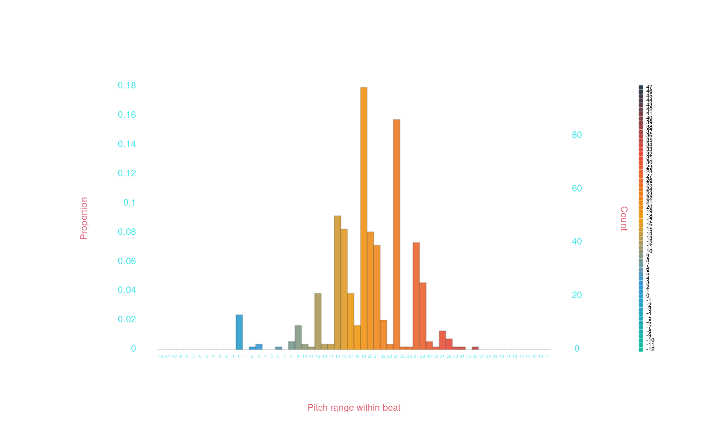

When analyzing musical data, we often treat each and every data token as a separate, independent “data point.” However, in many cases, we want to consider data points in context—what other data points are nearby in the data? Since the humdrum syntax encodes data in temporal order, the “context” usually means either “what is happening before or after this data point?” or “what else is happening at the same time as this this data point?” Humdrum\(_{\mathbb{R}}\) provides a number of ways of analyzing data “in context.”
Groupby
The most conventionally “R-style” way to look at data context is
using R/humdrum\(_{\mathbb{R}}\)’s
various “group by” options. This functionality is described elsewhere,
for example in the Working With Data
article, and in the within.humdrumR() man page. Group-by
functionality isn’t necessarily connected to temporal context: you can,
for instance, group together all the data from each instrument in an
ensemble, across all songs in a dataset—this is useful, but
non-temporal-context. If you want to use groupby to get
more temporal context, here are a few good options:
Group by Record
All humdrum\(_{\mathbb{R}}\) data
has a Record field, indicating data points that occur at
the same time. Using within.humdrumR()’s
groupby argument, we can perform calculations grouped by
record.
Let’s load our trusty Bach-chorale data:
chorales <- readHumdrum(humdrumRroot, 'HumdrumData/BachChorales/.*krn')Let’s count how many new note onsets (not rests) occur on each record
of the data, and tabulate the results. We’ll look for tokens that
don’t contain an r (for rest), using a
regular-expression match %~% 'r' and the negating bang
(!).
with(chorales, sum(!Token %~% 'r'), by = list(File, Record)) |> table()
>
> 0 1 2 3 4
> 1 211 89 64 462Most records have new notes in all four voices—Not surprising for
choral music—with one onset being the next most common case.
Note that we include File in our groupby argument (e.g.,
by = list(File, Record)). Why? Because each piece/file in
the data set repeats the same record numbers—you wouldn’t want to count
the 17th record from the 3rd chorale together with the 17th record from
the 7th chorale, for example.
Group by Bar
Most humdrum data includes bar lines, indicated by =.
When humdrum\(_{\mathbb{R}}\) reads
data (?readHumdrumR) data, it will look at these barlines,
count them in each file, and put that count into a field called
Bar (?fields). You can then use this data to
group data by bar. Remember, that if your data set has no =
tokens, the Bar field will be nothing but useless
0s.
What if we wanted to know what the lowest note in each bar of the
music is. Let’s first extract semits() data, so it is easy
to get the lowest value:
We can now group within bars, get the minimum, an tabulate them.
with(chorales, Kern[which.min(Semits)], by = list(File, Bar)) |> table()
>
> CC CC# DD DD# EE- EE EE# FF FF# GG GG# AA- AA AA# BB- BB C C# D D#
> 0 0 1 0 0 6 0 9 3 21 1 3 23 0 7 23 9 15 19 2
> E- E E# F F# G G# A- A A# B- B c c# d d# e- e e# f
> 1 17 1 1 5 4 1 0 4 0 0 0 0 0 0 0 0 0 0 0
> f# g g# a- a a# b- b cc cc# dd dd# ee- ee ee# ff ff# gg gg# aa-
> 0 0 0 0 0 0 0 0 0 0 0 0 0 0 0 0 0 0 0 0
> aa aa# bb- bb
> 0 0 0 0The highest lowest-note-in-bar is A.
For further analysis, we might want to save the lowest-note into a
new field. Let’s use within.humdrumR’s fill =
option to duplicate the low note throughout the bar:
within(chorales, fill = min(Semits) -> Lowest, by = list(File, Bar)) -> chorales
chorales
> ############################# vvv chor001.krn vvv #############################
> 1: !!!COM: Bach, Johann Sebastian
> 2: !!!CDT: 1685/02/21/-1750/07/28/
> 3: !!!OTL@@DE: Aus meines Herzens Grunde
> 4: !!!OTL@EN: From the Depths of My Heart
> 5: !!!SCT: BWV 269
> 6: !!!PC#: 1
> 7: !!!AGN: chorale
> 8: **semits **semits **semits **semits
> 9: *ICvox *ICvox *ICvox *ICvox
> 10: *Ibass *Itenor *Ialto *Isoprn
> 11: *I"Bass *I"Tenor *I"Alto *I"Soprano
> 12: *>[A,A,B] *>[A,A,B] *>[A,A,B] *>[A,A,B]
> 13: *>norep[A,B] *>norep[A,B] *>norep[A,B] *>norep[A,B]
> 14: *>A *>A *>A *>A
> 15: *clefF4 *clefGv2 *clefG2 *clefG2
> 16: *k[f#] *k[f#] *k[f#] *k[f#]
> 17: *G: *G: *G: *G:
> 18: *M3/4 *M3/4 *M3/4 *M3/4
> 19: *MM100 *MM100 *MM100 *MM100
> 20: -17 -17 -17 -17
> 21: =1 =1 =1 =1
> 22: -8 -8 -8 -8
> 23: -8 -8 -8 .
> 24: . -8 . .
> 25: -8 -8 -8 -8
> 26: =2 =2 =2 =2
> 27: -10 -10 -10 -10
> 28: -10 -10 . .
> 29: . . . -10
> 30: -10 -10 -10 -10
> 31: =3 =3 =3 =3
> 32: -17 -17 -17 -17
> 33: . -17 -17 .
> 34: -17 -17 -17 .
> 35: -17 . -17 -17
> 36: -17 -17 -17 -17
> 37: =4 =4 =4 =4
> 38: -17 -17 -17 -17
> 39: -17 -17 -17 -17
> 40: =5 =5 =5 =5
> 41-133:::::::::::::::::::::::::::::::::::::::::::::::::::::::::::::::::::::::::
> ############################# ^^^ chor001.krn ^^^ #############################
>
> (8 more pieces...)
>
> ############################# vvv chor010.krn vvv #############################
> 1-60:::::::::::::::::::::::::::::::::::::::::::::::::::::::::::::::::::::::::
> 61: -15 -15 -15 -15
> 62: -15 -15 -15 -15
> 63: =9 =9 =9 =9
> 64: -13 -13 -13 -13
> 65: -13 -13 -13 -13
> 66: -13 . . .
> 67: -13 -13 -13 -13
> 68: . . -13 .
> 69: -13 -13 -13 -13
> 70: =10 =10 =10 =10
> 71: -17 -17 -17 -17
> 72: . -17 . .
> 73: -17 . -17 -17
> 74: . -17 . .
> 75: -17 -17 -17 -17
> 76: =11 =11 =11 =11
> 77: -15 -15 -15 -15
> 78: -15 -15 -15 -15
> 79: -15 -15 -15 -15
> 80: . . -15 .
> 81: =12 =12 =12 =12
> 82: -15 -15 -15 -15
> 83: -15 -15 -15 -15
> 84: -15 -15 -15 -15
> 85: -15 -15 . -15
> 86: =13 =13 =13 =13
> 87: -20 -20 -20 -20
> 88: -20 -20 -20 .
> 89: -20 -20 -20 .
> 90: == == == ==
> 91: *- *- *- *-
> 92: !!!hum2abc: -Q ''
> 93: !!!title: @{PC#}. @{OTL@@DE}
> 94: !!!YOR1: 371 vierstimmige Choralgesänge von Johann Sebastian B***
> 95: !!!YOR2: 4th ed. by Alfred Dörffel (Leipzig: Breitkopf und H&a***
> 96: !!!YOR2: c.1875). 178 pp. Plate "V.A.10". reprint: J.S. Bach, 371 ***
> 97: !!!YOR4: Chorales (New York: Associated Music Publishers, Inc., c.1***
> 98: !!!SMS: B&H, 4th ed, Alfred Dörffel, c.1875, plate V.A.10
> 99: !!!EED: Craig Stuart Sapp
> 100: !!!EEV: 2009/05/22
> ############################# ^^^ chor010.krn ^^^ #############################
> (***four global comments truncated due to screen size***)
>
> humdrumR corpus of ten pieces.
> Data fields:
> Token :: character
> Semits :: integer (**semits tokens)
> Kern :: character (**kern tokens)
> *Lowest :: integer (**semits tokens)We could then, for example, subtract the bar’s lowest note from each note:
with(chorales, Semits - Lowest) |> table()
>
> -12 -11 -10 -9 -8 -7 -6 -5 -4 -3 -2 -1 0 1 2 3 4 5 6 7
> 0 0 0 0 0 0 0 0 0 0 0 0 196 40 96 74 62 103 21 106
> 8 9 10 11 12 13 14 15 16 17 18 19 20 21 22 23 24 25 26 27
> 34 53 49 45 171 22 68 97 98 146 42 228 64 96 69 47 168 13 62 44
> 28 29 30 31 32 33 34 35 36 37 38 39 40 41 42 43 44 45 46 47
> 42 36 3 22 6 1 2 0 2 0 0 1 0 0 0 0 0 0 0 0Group by Beat
Another useful contextual group is the beat. There will be no
automatic “beat” field in our data, we’ll need to make it—obviously, we
need ti have data with rhythmic information encoded (like
**kern or **recip). We can use the
count() function to count the beats in our data. We could
count quarter-notes by setting beat = '4'; alternatively,
if our data includes time-signature interpretations (like
*M3/4) we could use the TimeSignature field to
get the tactus of the meter. Let’s try the later and save the result to
a new field, which we’ll call Beat (or anything else you
want).
within(chorales, count(Token, beat = tactus(TimeSignature)) -> Beat) -> chorales
chorales
> ############################# vvv chor001.krn vvv #############################
> 1: !!!COM: Bach, Johann Sebastian
> 2: !!!CDT: 1685/02/21/-1750/07/28/
> 3: !!!OTL@@DE: Aus meines Herzens Grunde
> 4: !!!OTL@EN: From the Depths of My Heart
> 5: !!!SCT: BWV 269
> 6: !!!PC#: 1
> 7: !!!AGN: chorale
> 8: **kern **kern **kern **kern
> 9: *ICvox *ICvox *ICvox *ICvox
> 10: *Ibass *Itenor *Ialto *Isoprn
> 11: *I"Bass *I"Tenor *I"Alto *I"Soprano
> 12: *>[A,A,B] *>[A,A,B] *>[A,A,B] *>[A,A,B]
> 13: *>norep[A,B] *>norep[A,B] *>norep[A,B] *>norep[A,B]
> 14: *>A *>A *>A *>A
> 15: *clefF4 *clefGv2 *clefG2 *clefG2
> 16: *k[f#] *k[f#] *k[f#] *k[f#]
> 17: *G: *G: *G: *G:
> 18: *M3/4 *M3/4 *M3/4 *M3/4
> 19: *MM100 *MM100 *MM100 *MM100
> 20: 1 1 1 1
> 21: =1 =1 =1 =1
> 22: 2 2 2 2
> 23: 3 3 3 .
> 24: . 3 . .
> 25: 4 4 4 4
> 26: =2 =2 =2 =2
> 27: 5 5 5 5
> 28: 6 6 . .
> 29: . . . 6
> 30: 7 7 7 7
> 31: =3 =3 =3 =3
> 32: 8 8 8 8
> 33: . 8 8 .
> 34: 9 9 9 .
> 35: 9 . 9 9
> 36: 10 10 10 10
> 37: =4 =4 =4 =4
> 38: 11 11 11 11
> 39: 13 13 13 13
> 40: =5 =5 =5 =5
> 41-133:::::::::::::::::::::::::::::::::::::::::::::::::::::::::::::::::::::::::
> ############################# ^^^ chor001.krn ^^^ #############################
>
> (8 more pieces...)
>
> ############################# vvv chor010.krn vvv #############################
> 1-60:::::::::::::::::::::::::::::::::::::::::::::::::::::::::::::::::::::::::
> 61: 29 29 29 29
> 62: 31 31 31 31
> 63: =9 =9 =9 =9
> 64: 33 33 33 33
> 65: 34 34 34 34
> 66: 34 . . .
> 67: 35 35 35 35
> 68: . . 35 .
> 69: 36 36 36 36
> 70: =10 =10 =10 =10
> 71: 37 37 37 37
> 72: . 37 . .
> 73: 38 . 38 38
> 74: . 38 . .
> 75: 39 39 39 39
> 76: =11 =11 =11 =11
> 77: 41 41 41 41
> 78: 43 43 43 43
> 79: 44 44 44 44
> 80: . . 44 .
> 81: =12 =12 =12 =12
> 82: 45 45 45 45
> 83: 46 46 46 46
> 84: 47 47 47 47
> 85: 48 48 . 48
> 86: =13 =13 =13 =13
> 87: 49 49 49 49
> 88: 50 50 50 .
> 89: 51 51 51 .
> 90: == == == ==
> 91: *- *- *- *-
> 92: !!!hum2abc: -Q ''
> 93: !!!title: @{PC#}. @{OTL@@DE}
> 94: !!!YOR1: 371 vierstimmige Choralgesänge von Johann Sebastian B***
> 95: !!!YOR2: 4th ed. by Alfred Dörffel (Leipzig: Breitkopf und H&a***
> 96: !!!YOR2: c.1875). 178 pp. Plate "V.A.10". reprint: J.S. Bach, 371 ***
> 97: !!!YOR4: Chorales (New York: Associated Music Publishers, Inc., c.1***
> 98: !!!SMS: B&H, 4th ed, Alfred Dörffel, c.1875, plate V.A.10
> 99: !!!EED: Craig Stuart Sapp
> 100: !!!EEV: 2009/05/22
> ############################# ^^^ chor010.krn ^^^ #############################
> (***four global comments truncated due to screen size***)
>
> humdrumR corpus of ten pieces.
> Data fields:
> Token :: character
> Semits :: integer (**semits tokens)
> Kern :: character (**kern tokens)
> Lowest :: integer (**semits tokens)
> *Beat :: integerWe can now group by beat. Maybe we want to know the range of notes in each beat:

Note: If your data includes spine paths, you’ll want to set
within(mydata, count(Token), expandPaths = TRUE, ...). Count (and similar functions, liketimeline()) won’t work correctly without paths expanded (?expandPaths).
Contextual Windows
When you use groupby/by, your data is
exhaustively partitioned into non-overlapping groups; the groups are
also not necessarily ordered—we have to explicitely used (temporally)
ordered groups like list(File, Record) if we want temporal
context. In contrast, the context() function, when used in
combination with with.humdrumR(), gives us much more
flexible control over the context we want for our data.
context() takes an input vector and treats it as an
ordered sequence of information. It then identifies arbitrary contextual
windows in the data, based on your criteria. The windows created by
context() are always sequentially ordered, aren’t
necessarily exhaustive (some data might not fall in any window), and can
overlap (some data falls in multiple windows).
The way you use context() is by telling it when to
“open” (begin) and “close” (end) contextual windows, using the
open and close arguments. Context can use many
criteria to open/close windows. In the following sections, we layout
just a few examples; we’ll use our chorale data again, as well as the
built-in Beethoven variation data:
chorales <- readHumdrum(humdrumRroot, 'HumdrumData/BachChorales/.*krn')For most examples, we’ll use within.humdrumR() and run
the command paste(Token, collapse = '-'). This is the
simplest/fastest way to see what context() is
doing!
Regular windows
In some cases, we simply want to progress through data and open/close
windows at regular locations. We can do this using the
hop() function. (hop() is a humdrum\(_{\mathbb{R}}\) function which is very
similar to R’s base seq() function; however,
hop() has some special features and, more importantly, gets
special treatment from context()). Maybe we want to open a
four-note window on every note:
within(chorales, paste(Token, collapse = '-'), context(hop(), open + 3))
> ####################### vvv chor001.krn vvv ########################
> 1: !!!COM: Bach, Johann Sebastian
> 2: !!!CDT: 1685/02/21/-1750/07/28/
> 3: !!!OTL@@DE: Aus meines Herzens Grunde
> 4: !!!OTL@EN: From the Depths of My Heart
> 5: !!!SCT: BWV 269
> 6: !!!PC#: 1
> 7: !!!AGN: chorale
> 8: **kern **kern **kern ***
> 9: *ICvox *ICvox *ICvox ***
> 10: *Ibass *Itenor *Ialto ***
> 11: *I"Bass *I"Tenor *I"Alto ***
> 12: *>[A,A,B] *>[A,A,B] *>[A,A,B] ***
> 13: *>norep[A,B] *>norep[A,B] *>norep[A,B] ***
> 14: *>A *>A *>A ***
> 15: *clefF4 *clefGv2 *clefG2 ***
> 16: *k[f#] *k[f#] *k[f#] ***
> 17: *G: *G: *G: ***
> 18: *M3/4 *M3/4 *M3/4 ***
> 19: *MM100 *MM100 *MM100 ***
> 20: 4GG-4G-4E-4F# 4B-4B-8cL-8BJ 4d-4d-4e-4d ***
> 21: =1 =1 =1 ***
> 22: 4G-4E-4F#-4G 4B-8cL-8BJ-4A 4d-4e-4d-2d ***
> 23: 4E-4F#-4G-4D 8cL-8BJ-4A-4G 4e-4d-2d-4B ***
> 24: . 8BJ-4A-4G-4F# . ***
> 25: 4F#-4G-4D-4E 4A-4G-4F#-4G 4d-2d-4B-8eL ***
> 26: =2 =2 =2 ***
> 27: 4G-4D-4E-4C 4G-4F#-4G-8cL 2d-4B-8eL-8d ***
> 28: 4D-4E-4C-8BBL 4F#-4G-8cL-8BJ . ***
> 29: . . . ***
> 30: 4E-4C-8BBL-8AAJ 4G-8cL-8BJ-4c 4B-8eL-8d-8e ***
> 31: =3 =3 =3 ***
> 32: 4C-8BBL-8AAJ-4GG 8cL-8BJ-4c-4d 8eL-8d-8e-8f#J ***
> 33: . 8BJ-4c-4d-2d; 8d-8e-8f#J-4g ***
> 34: 8BBL-8AAJ-4GG-2D; 4c-4d-2d;-4d 8e-8f#J-4g-2f#; ***
> 35: 8AAJ-4GG-2D;-4GG . 8f#J-4g-2f#;-4g ***
> 36: 4GG-2D;-4GG-4FF# 4d-2d;-4d-4A 4g-2f#;-4g-4d ***
> 37: =4 =4 =4 ***
> 38: 2D;-4GG-4FF#-4GG 2d;-4d-4A-4B 2f#;-4g-4d-4e ***
> 39: 4GG-4FF#-4GG-4AA 4d-4A-4B-4c 4g-4d-4e-4f# ***
> 40: =5 =5 =5 ***
> 41-133::::::::::::::::::::::::::::::::::::::::::::::::::::::::::::::
> ####################### ^^^ chor001.krn ^^^ ########################
>
> (8 more pieces...)
>
> ####################### vvv chor010.krn vvv ########################
> 1-60::::::::::::::::::::::::::::::::::::::::::::::::::::::::::::::
> 61: 2AA;-2A-4E-8DL 2c;-2e-4e-4e 2e;-2a-4g-4g ***
> 62: 2A-4E-8DL-8CJ 2e-4e-4e-4d 2a-4g-4g-8gL ***
> 63: =9 =9 =9 ***
> 64: 4E-8DL-8CJ-4BB 4e-4e-4d-4c 4g-4g-8gL-8fJ ***
> 65: 8DL-8CJ-4BB-4C 4e-4d-4c-8F# 4g-8gL-8fJ-4e ***
> 66: 8CJ-4BB-4C-4D . . ***
> 67: 4BB-4C-4D-4D 4d-4c-8F#-4G 8gL-8fJ-4e-4d ***
> 68: . . 8fJ-4e-4d-4c ***
> 69: 4C-4D-4D-2GG; 4c-8F#-4G-8F# 4e-4d-4c-2B; ***
> 70: =10 =10 =10 ***
> 71: 4D-4D-2GG;-2C 8F#-4G-8F#-2G; 4d-4c-2B;-2e ***
> 72: . 4G-8F#-2G;-2G . ***
> 73: 4D-2GG;-2C-4AA . 4c-2B;-2e-4e ***
> 74: . 8F#-2G;-2G-4A . ***
> 75: 2GG;-2C-4AA-4E 2G;-2G-4A-4G# 2B;-2e-4e-8eL ***
> 76: =11 =11 =11 ***
> 77: 2C-4AA-4E-4F 2G-4A-4G#-4A 2e-4e-8eL-8dJ ***
> 78: 4AA-4E-4F-4C 4A-4G#-4A-4G 4e-8eL-8dJ-4c ***
> 79: 4E-4F-4C-4BB- 4G#-4A-4G-4G 8eL-8dJ-4c-4c ***
> 80: . . 8dJ-4c-4c-[2d ***
> 81: =12 =12 =12 ***
> 82: 4F-4C-4BB--4AA 4A-4G-4G-4A 4c-4c-[2d-4d] ***
> 83: 4C-4BB--4AA-4GG# 4G-4G-4A-4B 4c-[2d-4d]-4c ***
> 84: 4BB--4AA-4GG#-4AA 4G-4A-4B-4A [2d-4d]-4c-2B; ***
> 85: 4AA-4GG#-4AA-2EE; 4A-4B-4A-2G#X; . ***
> 86: =13 =13 =13 ***
> 87: . . . ***
> 88: . . . ***
> 89: . . . ***
> 90: == == == ***
> 91: *- *- *- ***
> 92: !!!hum2abc: -Q ''
> 93: !!!title: @{PC#}. @{OTL@@DE}
> 94: !!!YOR1: 371 vierstimmige Choralgesänge von Johann ***
> 95: !!!YOR2: 4th ed. by Alfred Dörffel (Leipzig: Breitk***
> 96: !!!YOR2: c.1875). 178 pp. Plate "V.A.10". reprint: J.S.***
> 97: !!!YOR4: Chorales (New York: Associated Music Publishers***
> 98: !!!SMS: B&H, 4th ed, Alfred Dörffel, c.1875, plate ***
> 99: !!!EED: Craig Stuart Sapp
> 100: !!!EEV: 2009/05/22
> ####################### ^^^ chor010.krn ^^^ ########################
> (***one spine/path not displayed due to screen size***)
>
> humdrumR corpus of ten pieces.
> Data fields:
> Token :: character
> Semits :: integer (**semits tokens)
> Kern :: character (**kern tokens)
> Lowest :: integer (**semits tokens)
> Beat :: integer
> *Result1 :: characterCool, we’ve got overlapping four-note windows, running throught each spine! How did we do this?
Regular Open
The first argument to context() is the open
argument; we give open a set of indices (natural numbers)
where to open windows in the data. hop() simply generates a
sequence of numbers “along” the input data—by default, the “hop size” is
1, but we can change that. For example:
hop(letters, by = 1)
> [1] 1 2 3 4 5 6 7 8 9 10 11 12 13 14 15 16 17 18 19 20 21 22 23 24 25
> [26] 26
hop(letters, by = 2)
> [1] 1 3 5 7 9 11 13 15 17 19 21 23 25When we use hop() inside context(), it
automatically knows what the input vector is. So now check this out:
within(chorales, paste(Token, collapse = '-'), context(hop(2), open + 3))
> ####################### vvv chor001.krn vvv ########################
> 1: !!!COM: Bach, Johann Sebastian
> 2: !!!CDT: 1685/02/21/-1750/07/28/
> 3: !!!OTL@@DE: Aus meines Herzens Grunde
> 4: !!!OTL@EN: From the Depths of My Heart
> 5: !!!SCT: BWV 269
> 6: !!!PC#: 1
> 7: !!!AGN: chorale
> 8: **kern **kern **kern ***
> 9: *ICvox *ICvox *ICvox ***
> 10: *Ibass *Itenor *Ialto ***
> 11: *I"Bass *I"Tenor *I"Alto ***
> 12: *>[A,A,B] *>[A,A,B] *>[A,A,B] ***
> 13: *>norep[A,B] *>norep[A,B] *>norep[A,B] ***
> 14: *>A *>A *>A ***
> 15: *clefF4 *clefGv2 *clefG2 ***
> 16: *k[f#] *k[f#] *k[f#] ***
> 17: *G: *G: *G: ***
> 18: *M3/4 *M3/4 *M3/4 ***
> 19: *MM100 *MM100 *MM100 ***
> 20: 4GG-4G-4E-4F# 4B-4B-8cL-8BJ 4d-4d-4e-4d ***
> 21: =1 =1 =1 ***
> 22: . . . ***
> 23: 4E-4F#-4G-4D 8cL-8BJ-4A-4G 4e-4d-2d-4B ***
> 24: . . . ***
> 25: . 4A-4G-4F#-4G . ***
> 26: =2 =2 =2 ***
> 27: 4G-4D-4E-4C . 2d-4B-8eL-8d ***
> 28: . 4F#-4G-8cL-8BJ . ***
> 29: . . . ***
> 30: 4E-4C-8BBL-8AAJ . . ***
> 31: =3 =3 =3 ***
> 32: . 8cL-8BJ-4c-4d 8eL-8d-8e-8f#J ***
> 33: . . . ***
> 34: 8BBL-8AAJ-4GG-2D; 4c-4d-2d;-4d 8e-8f#J-4g-2f#; ***
> 35: . . . ***
> 36: 4GG-2D;-4GG-4FF# . 4g-2f#;-4g-4d ***
> 37: =4 =4 =4 ***
> 38: . 2d;-4d-4A-4B . ***
> 39: 4GG-4FF#-4GG-4AA . 4g-4d-4e-4f# ***
> 40: =5 =5 =5 ***
> 41-133::::::::::::::::::::::::::::::::::::::::::::::::::::::::::::::
> ####################### ^^^ chor001.krn ^^^ ########################
>
> (8 more pieces...)
>
> ####################### vvv chor010.krn vvv ########################
> 1-60::::::::::::::::::::::::::::::::::::::::::::::::::::::::::::::
> 61: 2AA;-2A-4E-8DL 2c;-2e-4e-4e . ***
> 62: . . 2a-4g-4g-8gL ***
> 63: =9 =9 =9 ***
> 64: 4E-8DL-8CJ-4BB 4e-4e-4d-4c . ***
> 65: . . 4g-8gL-8fJ-4e ***
> 66: 8CJ-4BB-4C-4D . . ***
> 67: . 4d-4c-8F#-4G . ***
> 68: . . 8fJ-4e-4d-4c ***
> 69: 4C-4D-4D-2GG; . . ***
> 70: =10 =10 =10 ***
> 71: . 8F#-4G-8F#-2G; 4d-4c-2B;-2e ***
> 72: . . . ***
> 73: 4D-2GG;-2C-4AA . . ***
> 74: . 8F#-2G;-2G-4A . ***
> 75: . . 2B;-2e-4e-8eL ***
> 76: =11 =11 =11 ***
> 77: 2C-4AA-4E-4F 2G-4A-4G#-4A . ***
> 78: . . 4e-8eL-8dJ-4c ***
> 79: 4E-4F-4C-4BB- 4G#-4A-4G-4G . ***
> 80: . . 8dJ-4c-4c-[2d ***
> 81: =12 =12 =12 ***
> 82: . . . ***
> 83: 4C-4BB--4AA-4GG# 4G-4G-4A-4B 4c-[2d-4d]-4c ***
> 84: . . . ***
> 85: 4AA-4GG#-4AA-2EE; 4A-4B-4A-2G#X; . ***
> 86: =13 =13 =13 ***
> 87: . . . ***
> 88: . . . ***
> 89: . . . ***
> 90: == == == ***
> 91: *- *- *- ***
> 92: !!!hum2abc: -Q ''
> 93: !!!title: @{PC#}. @{OTL@@DE}
> 94: !!!YOR1: 371 vierstimmige Choralgesänge von Johann ***
> 95: !!!YOR2: 4th ed. by Alfred Dörffel (Leipzig: Breitk***
> 96: !!!YOR2: c.1875). 178 pp. Plate "V.A.10". reprint: J.S.***
> 97: !!!YOR4: Chorales (New York: Associated Music Publishers***
> 98: !!!SMS: B&H, 4th ed, Alfred Dörffel, c.1875, plate ***
> 99: !!!EED: Craig Stuart Sapp
> 100: !!!EEV: 2009/05/22
> ####################### ^^^ chor010.krn ^^^ ########################
> (***one spine/path not displayed due to screen size***)
>
> humdrumR corpus of ten pieces.
> Data fields:
> Token :: character
> Semits :: integer (**semits tokens)
> Kern :: character (**kern tokens)
> Lowest :: integer (**semits tokens)
> Beat :: integer
> *Result1 :: characterBy saying hop(2), our windows only open on every
other index. If we don’t want our four-note windows to overlap
at all, we could set hop(4):
within(chorales, paste(Token, collapse = '-'), context(hop(4), open + 3))
> ####################### vvv chor001.krn vvv ########################
> 1: !!!COM: Bach, Johann Sebastian
> 2: !!!CDT: 1685/02/21/-1750/07/28/
> 3: !!!OTL@@DE: Aus meines Herzens Grunde
> 4: !!!OTL@EN: From the Depths of My Heart
> 5: !!!SCT: BWV 269
> 6: !!!PC#: 1
> 7: !!!AGN: chorale
> 8: **kern **kern **kern ***
> 9: *ICvox *ICvox *ICvox ***
> 10: *Ibass *Itenor *Ialto ***
> 11: *I"Bass *I"Tenor *I"Alto ***
> 12: *>[A,A,B] *>[A,A,B] *>[A,A,B] ***
> 13: *>norep[A,B] *>norep[A,B] *>norep[A,B] ***
> 14: *>A *>A *>A ***
> 15: *clefF4 *clefGv2 *clefG2 ***
> 16: *k[f#] *k[f#] *k[f#] ***
> 17: *G: *G: *G: ***
> 18: *M3/4 *M3/4 *M3/4 ***
> 19: *MM100 *MM100 *MM100 ***
> 20: 4GG-4G-4E-4F# 4B-4B-8cL-8BJ 4d-4d-4e-4d ***
> 21: =1 =1 =1 ***
> 22: . . . ***
> 23: . . . ***
> 24: . . . ***
> 25: . 4A-4G-4F#-4G . ***
> 26: =2 =2 =2 ***
> 27: 4G-4D-4E-4C . 2d-4B-8eL-8d ***
> 28: . . . ***
> 29: . . . ***
> 30: . . . ***
> 31: =3 =3 =3 ***
> 32: . 8cL-8BJ-4c-4d . ***
> 33: . . . ***
> 34: 8BBL-8AAJ-4GG-2D; . 8e-8f#J-4g-2f#; ***
> 35: . . . ***
> 36: . . . ***
> 37: =4 =4 =4 ***
> 38: . 2d;-4d-4A-4B . ***
> 39: 4GG-4FF#-4GG-4AA . 4g-4d-4e-4f# ***
> 40: =5 =5 =5 ***
> 41-133::::::::::::::::::::::::::::::::::::::::::::::::::::::::::::::
> ####################### ^^^ chor001.krn ^^^ ########################
>
> (8 more pieces...)
>
> ####################### vvv chor010.krn vvv ########################
> 1-60::::::::::::::::::::::::::::::::::::::::::::::::::::::::::::::
> 61: . . . ***
> 62: . . 2a-4g-4g-8gL ***
> 63: =9 =9 =9 ***
> 64: 4E-8DL-8CJ-4BB 4e-4e-4d-4c . ***
> 65: . . . ***
> 66: . . . ***
> 67: . . . ***
> 68: . . 8fJ-4e-4d-4c ***
> 69: 4C-4D-4D-2GG; . . ***
> 70: =10 =10 =10 ***
> 71: . 8F#-4G-8F#-2G; . ***
> 72: . . . ***
> 73: . . . ***
> 74: . . . ***
> 75: . . 2B;-2e-4e-8eL ***
> 76: =11 =11 =11 ***
> 77: 2C-4AA-4E-4F 2G-4A-4G#-4A . ***
> 78: . . . ***
> 79: . . . ***
> 80: . . 8dJ-4c-4c-[2d ***
> 81: =12 =12 =12 ***
> 82: . . . ***
> 83: 4C-4BB--4AA-4GG# 4G-4G-4A-4B . ***
> 84: . . . ***
> 85: . . . ***
> 86: =13 =13 =13 ***
> 87: . . . ***
> 88: . . . ***
> 89: . . . ***
> 90: == == == ***
> 91: *- *- *- ***
> 92: !!!hum2abc: -Q ''
> 93: !!!title: @{PC#}. @{OTL@@DE}
> 94: !!!YOR1: 371 vierstimmige Choralgesänge von Johann ***
> 95: !!!YOR2: 4th ed. by Alfred Dörffel (Leipzig: Breitk***
> 96: !!!YOR2: c.1875). 178 pp. Plate "V.A.10". reprint: J.S.***
> 97: !!!YOR4: Chorales (New York: Associated Music Publishers***
> 98: !!!SMS: B&H, 4th ed, Alfred Dörffel, c.1875, plate ***
> 99: !!!EED: Craig Stuart Sapp
> 100: !!!EEV: 2009/05/22
> ####################### ^^^ chor010.krn ^^^ ########################
> (***one spine/path not displayed due to screen size***)
>
> humdrumR corpus of ten pieces.
> Data fields:
> Token :: character
> Semits :: integer (**semits tokens)
> Kern :: character (**kern tokens)
> Lowest :: integer (**semits tokens)
> Beat :: integer
> *Result1 :: characterNote that the by argument can be a vector of hop-sizes,
which will cause hop() to generate a sequence of irregular
hops! You can also use hop()’s from and
to arguments to control when the first/last windows occur,
etc. When using to, you can refer to another special
variable—end—which context() will interpret as
the last index. So you could, for example, say
hop(from = 5, to = end - 5).
Fixed Close
So hop() is telling context() when to open
windows; how are we telling it when to close windows? The second
argument to context() is the close argument.
Like open, the close argument should be a set
of natural-number indices. However, the cool thing is that the
close argument can refer to the open
argument. So rather than manually figuring out what index would go with
each open (don’t try, because the multiple spines etc. make
it confusing), we simply say open + 3. If we want five-note
windows, we can say open + 4.
What if we want to the window to simply close before the next
opening? We can do this by having the close argument refer
to the nextopen variable. So instead of saying
open + 3 we say nextopen - 1L!
within(chorales, paste(Token, collapse = '-'), context(hop(4), nextopen - 1L))
> ####################### vvv chor001.krn vvv ########################
> 1: !!!COM: Bach, Johann Sebastian
> 2: !!!CDT: 1685/02/21/-1750/07/28/
> 3: !!!OTL@@DE: Aus meines Herzens Grunde
> 4: !!!OTL@EN: From the Depths of My Heart
> 5: !!!SCT: BWV 269
> 6: !!!PC#: 1
> 7: !!!AGN: chorale
> 8: **kern **kern **kern ***
> 9: *ICvox *ICvox *ICvox ***
> 10: *Ibass *Itenor *Ialto ***
> 11: *I"Bass *I"Tenor *I"Alto ***
> 12: *>[A,A,B] *>[A,A,B] *>[A,A,B] ***
> 13: *>norep[A,B] *>norep[A,B] *>norep[A,B] ***
> 14: *>A *>A *>A ***
> 15: *clefF4 *clefGv2 *clefG2 ***
> 16: *k[f#] *k[f#] *k[f#] ***
> 17: *G: *G: *G: ***
> 18: *M3/4 *M3/4 *M3/4 ***
> 19: *MM100 *MM100 *MM100 ***
> 20: 4GG-4G-4E-4F# 4B-4B-8cL-8BJ 4d-4d-4e-4d ***
> 21: =1 =1 =1 ***
> 22: . . . ***
> 23: . . . ***
> 24: . . . ***
> 25: . 4A-4G-4F#-4G . ***
> 26: =2 =2 =2 ***
> 27: 4G-4D-4E-4C . 2d-4B-8eL-8d ***
> 28: . . . ***
> 29: . . . ***
> 30: . . . ***
> 31: =3 =3 =3 ***
> 32: . 8cL-8BJ-4c-4d . ***
> 33: . . . ***
> 34: 8BBL-8AAJ-4GG-2D; . 8e-8f#J-4g-2f#; ***
> 35: . . . ***
> 36: . . . ***
> 37: =4 =4 =4 ***
> 38: . 2d;-4d-4A-4B . ***
> 39: 4GG-4FF#-4GG-4AA . 4g-4d-4e-4f# ***
> 40: =5 =5 =5 ***
> 41-133::::::::::::::::::::::::::::::::::::::::::::::::::::::::::::::
> ####################### ^^^ chor001.krn ^^^ ########################
>
> (8 more pieces...)
>
> ####################### vvv chor010.krn vvv ########################
> 1-60::::::::::::::::::::::::::::::::::::::::::::::::::::::::::::::
> 61: . . . ***
> 62: . . 2a-4g-4g-8gL ***
> 63: =9 =9 =9 ***
> 64: 4E-8DL-8CJ-4BB 4e-4e-4d-4c . ***
> 65: . . . ***
> 66: . . . ***
> 67: . . . ***
> 68: . . 8fJ-4e-4d-4c ***
> 69: 4C-4D-4D-2GG; . . ***
> 70: =10 =10 =10 ***
> 71: . 8F#-4G-8F#-2G; . ***
> 72: . . . ***
> 73: . . . ***
> 74: . . . ***
> 75: . . 2B;-2e-4e-8eL ***
> 76: =11 =11 =11 ***
> 77: 2C-4AA-4E-4F 2G-4A-4G#-4A . ***
> 78: . . . ***
> 79: . . . ***
> 80: . . 8dJ-4c-4c-[2d ***
> 81: =12 =12 =12 ***
> 82: . . . ***
> 83: 4C-4BB--4AA-4GG# 4G-4G-4A-4B . ***
> 84: . . . ***
> 85: . . . ***
> 86: =13 =13 =13 ***
> 87: . . 4d]-4c-2B; ***
> 88: 4AA-2EE; 4A-2G#X; . ***
> 89: . . . ***
> 90: == == == ***
> 91: *- *- *- ***
> 92: !!!hum2abc: -Q ''
> 93: !!!title: @{PC#}. @{OTL@@DE}
> 94: !!!YOR1: 371 vierstimmige Choralgesänge von Johann ***
> 95: !!!YOR2: 4th ed. by Alfred Dörffel (Leipzig: Breitk***
> 96: !!!YOR2: c.1875). 178 pp. Plate "V.A.10". reprint: J.S.***
> 97: !!!YOR4: Chorales (New York: Associated Music Publishers***
> 98: !!!SMS: B&H, 4th ed, Alfred Dörffel, c.1875, plate ***
> 99: !!!EED: Craig Stuart Sapp
> 100: !!!EEV: 2009/05/22
> ####################### ^^^ chor010.krn ^^^ ########################
> (***one spine/path not displayed due to screen size***)
>
> humdrumR corpus of ten pieces.
> Data fields:
> Token :: character
> Semits :: integer (**semits tokens)
> Kern :: character (**kern tokens)
> Lowest :: integer (**semits tokens)
> Beat :: integer
> *Result1 :: characterNow we’ll get exhaustive windows no matter where we open the windows. For example, we can change the hop size and still get exhaustive windows!
within(chorales, paste(Token, collapse = '-'), context(hop(6), nextopen - 1L))
> ##################### vvv chor001.krn vvv #####################
> 1: !!!COM: Bach, Johann Sebastian
> 2: !!!CDT: 1685/02/21/-1750/07/28/
> 3: !!!OTL@@DE: Aus meines Herzens Grunde
> 4: !!!OTL@EN: From the Depths of My Heart
> 5: !!!SCT: BWV 269
> 6: !!!PC#: 1
> 7: !!!AGN: chorale
> 8: **kern **kern ***
> 9: *ICvox *ICvox ***
> 10: *Ibass *Itenor ***
> 11: *I"Bass *I"Tenor ***
> 12: *>[A,A,B] *>[A,A,B] ***
> 13: *>norep[A,B] *>norep[A,B] ***
> 14: *>A *>A ***
> 15: *clefF4 *clefGv2 ***
> 16: *k[f#] *k[f#] ***
> 17: *G: *G: ***
> 18: *M3/4 *M3/4 ***
> 19: *MM100 *MM100 ***
> 20: 4GG-4G-4E-4F#-4G-4D 4B-4B-8cL-8BJ-4A-4G ***
> 21: =1 =1 ***
> 22: . . ***
> 23: . . ***
> 24: . . ***
> 25: . . ***
> 26: =2 =2 ***
> 27: . . ***
> 28: . 4F#-4G-8cL-8BJ-4c-4d ***
> 29: . . ***
> 30: 4E-4C-8BBL-8AAJ-4GG-2D; . ***
> 31: =3 =3 ***
> 32: . . ***
> 33: . . ***
> 34: . . ***
> 35: . . ***
> 36: . . ***
> 37: =4 =4 ***
> 38: . 2d;-4d-4A-4B-4c-4d ***
> 39: 4GG-4FF#-4GG-4AA-4BB-4C . ***
> 40: =5 =5 ***
> 41-133:::::::::::::::::::::::::::::::::::::::::::::::::::::::::
> ##################### ^^^ chor001.krn ^^^ #####################
>
> (8 more pieces...)
>
> ##################### vvv chor010.krn vvv #####################
> 1-60:::::::::::::::::::::::::::::::::::::::::::::::::::::::::
> 61: . . ***
> 62: . . ***
> 63: =9 =9 ***
> 64: . . ***
> 65: . . ***
> 66: 8CJ-4BB-4C-4D-4D-2GG; . ***
> 67: . 4d-4c-8F#-4G-8F#-2G; ***
> 68: . . ***
> 69: . . ***
> 70: =10 =10 ***
> 71: . . ***
> 72: . . ***
> 73: . . ***
> 74: . . ***
> 75: . . ***
> 76: =11 =11 ***
> 77: 2C-4AA-4E-4F-4C-4BB- 2G-4A-4G#-4A-4G-4G ***
> 78: . . ***
> 79: . . ***
> 80: . . ***
> 81: =12 =12 ***
> 82: . . ***
> 83: . . ***
> 84: . . ***
> 85: 4AA-4GG#-4AA-2EE; 4A-4B-4A-2G#X; ***
> 86: =13 =13 ***
> 87: . . ***
> 88: . . ***
> 89: . . ***
> 90: == == ***
> 91: *- *- ***
> 92: !!!hum2abc: -Q ''
> 93: !!!title: @{PC#}. @{OTL@@DE}
> 94: !!!YOR1: 371 vierstimmige Choralgesänge von Jo***
> 95: !!!YOR2: 4th ed. by Alfred Dörffel (Leipzig: B***
> 96: !!!YOR2: c.1875). 178 pp. Plate "V.A.10". reprint:***
> 97: !!!YOR4: Chorales (New York: Associated Music Publi***
> 98: !!!SMS: B&H, 4th ed, Alfred Dörffel, c.1875, p***
> 99: !!!EED: Craig Stuart Sapp
> 100: !!!EEV: 2009/05/22
> ##################### ^^^ chor010.krn ^^^ #####################
> (***two spines/paths not displayed due to screen size***)
>
> humdrumR corpus of ten pieces.
> Data fields:
> Token :: character
> Semits :: integer (**semits tokens)
> Kern :: character (**kern tokens)
> Lowest :: integer (**semits tokens)
> Beat :: integer
> *Result1 :: characterWe could also close windows at nextopen - 2 or
nextopen + 1—whatever we want!
Flip it around
We don’t have to define open first, then have
close refer to open—we can also do the opposite!
within(chorales, paste(Token, collapse = '-'), context(close - 3, hop(4, from = 4)))
> ####################### vvv chor001.krn vvv ########################
> 1: !!!COM: Bach, Johann Sebastian
> 2: !!!CDT: 1685/02/21/-1750/07/28/
> 3: !!!OTL@@DE: Aus meines Herzens Grunde
> 4: !!!OTL@EN: From the Depths of My Heart
> 5: !!!SCT: BWV 269
> 6: !!!PC#: 1
> 7: !!!AGN: chorale
> 8: **kern **kern **kern ***
> 9: *ICvox *ICvox *ICvox ***
> 10: *Ibass *Itenor *Ialto ***
> 11: *I"Bass *I"Tenor *I"Alto ***
> 12: *>[A,A,B] *>[A,A,B] *>[A,A,B] ***
> 13: *>norep[A,B] *>norep[A,B] *>norep[A,B] ***
> 14: *>A *>A *>A ***
> 15: *clefF4 *clefGv2 *clefG2 ***
> 16: *k[f#] *k[f#] *k[f#] ***
> 17: *G: *G: *G: ***
> 18: *M3/4 *M3/4 *M3/4 ***
> 19: *MM100 *MM100 *MM100 ***
> 20: 4GG-4G-4E-4F# 4B-4B-8cL-8BJ 4d-4d-4e-4d ***
> 21: =1 =1 =1 ***
> 22: . . . ***
> 23: . . . ***
> 24: . . . ***
> 25: . 4A-4G-4F#-4G . ***
> 26: =2 =2 =2 ***
> 27: 4G-4D-4E-4C . 2d-4B-8eL-8d ***
> 28: . . . ***
> 29: . . . ***
> 30: . . . ***
> 31: =3 =3 =3 ***
> 32: . 8cL-8BJ-4c-4d . ***
> 33: . . . ***
> 34: 8BBL-8AAJ-4GG-2D; . 8e-8f#J-4g-2f#; ***
> 35: . . . ***
> 36: . . . ***
> 37: =4 =4 =4 ***
> 38: . 2d;-4d-4A-4B . ***
> 39: 4GG-4FF#-4GG-4AA . 4g-4d-4e-4f# ***
> 40: =5 =5 =5 ***
> 41-133::::::::::::::::::::::::::::::::::::::::::::::::::::::::::::::
> ####################### ^^^ chor001.krn ^^^ ########################
>
> (8 more pieces...)
>
> ####################### vvv chor010.krn vvv ########################
> 1-60::::::::::::::::::::::::::::::::::::::::::::::::::::::::::::::
> 61: . . . ***
> 62: . . 2a-4g-4g-8gL ***
> 63: =9 =9 =9 ***
> 64: 4E-8DL-8CJ-4BB 4e-4e-4d-4c . ***
> 65: . . . ***
> 66: . . . ***
> 67: . . . ***
> 68: . . 8fJ-4e-4d-4c ***
> 69: 4C-4D-4D-2GG; . . ***
> 70: =10 =10 =10 ***
> 71: . 8F#-4G-8F#-2G; . ***
> 72: . . . ***
> 73: . . . ***
> 74: . . . ***
> 75: . . 2B;-2e-4e-8eL ***
> 76: =11 =11 =11 ***
> 77: 2C-4AA-4E-4F 2G-4A-4G#-4A . ***
> 78: . . . ***
> 79: . . . ***
> 80: . . 8dJ-4c-4c-[2d ***
> 81: =12 =12 =12 ***
> 82: . . . ***
> 83: 4C-4BB--4AA-4GG# 4G-4G-4A-4B . ***
> 84: . . . ***
> 85: . . . ***
> 86: =13 =13 =13 ***
> 87: . . . ***
> 88: . . . ***
> 89: . . . ***
> 90: == == == ***
> 91: *- *- *- ***
> 92: !!!hum2abc: -Q ''
> 93: !!!title: @{PC#}. @{OTL@@DE}
> 94: !!!YOR1: 371 vierstimmige Choralgesänge von Johann ***
> 95: !!!YOR2: 4th ed. by Alfred Dörffel (Leipzig: Breitk***
> 96: !!!YOR2: c.1875). 178 pp. Plate "V.A.10". reprint: J.S.***
> 97: !!!YOR4: Chorales (New York: Associated Music Publishers***
> 98: !!!SMS: B&H, 4th ed, Alfred Dörffel, c.1875, plate ***
> 99: !!!EED: Craig Stuart Sapp
> 100: !!!EEV: 2009/05/22
> ####################### ^^^ chor010.krn ^^^ ########################
> (***one spine/path not displayed due to screen size***)
>
> humdrumR corpus of ten pieces.
> Data fields:
> Token :: character
> Semits :: integer (**semits tokens)
> Kern :: character (**kern tokens)
> Lowest :: integer (**semits tokens)
> Beat :: integer
> *Result1 :: characterWe’ve got the exact same result by telling the window closes to hop
along regularly (every four indices) and having the open
argument refer to the closing indices (close - 3). The
open argument can also refer to the prevclose
(previous close). Notice that our output windows are still “placed” to
align with the opening—we can set alignLeft = FALSE in our
call to within.humdrumR(), if we want the output to align
with the close:
within(chorales, paste(Token, collapse = '-'), context(close - 3, hop(4, from = 4)), alignLeft = FALSE)
> ####################### vvv chor001.krn vvv ########################
> 1: !!!COM: Bach, Johann Sebastian
> 2: !!!CDT: 1685/02/21/-1750/07/28/
> 3: !!!OTL@@DE: Aus meines Herzens Grunde
> 4: !!!OTL@EN: From the Depths of My Heart
> 5: !!!SCT: BWV 269
> 6: !!!PC#: 1
> 7: !!!AGN: chorale
> 8: **kern **kern **kern ***
> 9: *ICvox *ICvox *ICvox ***
> 10: *Ibass *Itenor *Ialto ***
> 11: *I"Bass *I"Tenor *I"Alto ***
> 12: *>[A,A,B] *>[A,A,B] *>[A,A,B] ***
> 13: *>norep[A,B] *>norep[A,B] *>norep[A,B] ***
> 14: *>A *>A *>A ***
> 15: *clefF4 *clefGv2 *clefG2 ***
> 16: *k[f#] *k[f#] *k[f#] ***
> 17: *G: *G: *G: ***
> 18: *M3/4 *M3/4 *M3/4 ***
> 19: *MM100 *MM100 *MM100 ***
> 20: . . . ***
> 21: =1 =1 =1 ***
> 22: . . . ***
> 23: . . . ***
> 24: . 4B-4B-8cL-8BJ . ***
> 25: 4GG-4G-4E-4F# . 4d-4d-4e-4d ***
> 26: =2 =2 =2 ***
> 27: . . . ***
> 28: . . . ***
> 29: . . . ***
> 30: . 4A-4G-4F#-4G . ***
> 31: =3 =3 =3 ***
> 32: 4G-4D-4E-4C . . ***
> 33: . . 2d-4B-8eL-8d ***
> 34: . . . ***
> 35: . . . ***
> 36: . 8cL-8BJ-4c-4d . ***
> 37: =4 =4 =4 ***
> 38: 8BBL-8AAJ-4GG-2D; . 8e-8f#J-4g-2f#; ***
> 39: . . . ***
> 40: =5 =5 =5 ***
> 41-133::::::::::::::::::::::::::::::::::::::::::::::::::::::::::::::
> ####################### ^^^ chor001.krn ^^^ ########################
>
> (8 more pieces...)
>
> ####################### vvv chor010.krn vvv ########################
> 1-60::::::::::::::::::::::::::::::::::::::::::::::::::::::::::::::
> 61: . . 8bL-8aJ-4g#-2e; ***
> 62: 4D-4E-2AA;-2A 4f-4B-2c;-2e . ***
> 63: =9 =9 =9 ***
> 64: . . . ***
> 65: . . . ***
> 66: . . . ***
> 67: 4E-8DL-8CJ-4BB . 2a-4g-4g-8gL ***
> 68: . . . ***
> 69: . 4e-4e-4d-4c . ***
> 70: =10 =10 =10 ***
> 71: . . . ***
> 72: . . . ***
> 73: . . 8fJ-4e-4d-4c ***
> 74: . . . ***
> 75: 4C-4D-4D-2GG; 8F#-4G-8F#-2G; . ***
> 76: =11 =11 =11 ***
> 77: . . . ***
> 78: . . . ***
> 79: . . 2B;-2e-4e-8eL ***
> 80: . . . ***
> 81: =12 =12 =12 ***
> 82: 2C-4AA-4E-4F 2G-4A-4G#-4A . ***
> 83: . . . ***
> 84: . . 8dJ-4c-4c-[2d ***
> 85: . . . ***
> 86: =13 =13 =13 ***
> 87: 4C-4BB--4AA-4GG# 4G-4G-4A-4B . ***
> 88: . . . ***
> 89: . . . ***
> 90: == == == ***
> 91: *- *- *- ***
> 92: !!!hum2abc: -Q ''
> 93: !!!title: @{PC#}. @{OTL@@DE}
> 94: !!!YOR1: 371 vierstimmige Choralgesänge von Johann ***
> 95: !!!YOR2: 4th ed. by Alfred Dörffel (Leipzig: Breitk***
> 96: !!!YOR2: c.1875). 178 pp. Plate "V.A.10". reprint: J.S.***
> 97: !!!YOR4: Chorales (New York: Associated Music Publishers***
> 98: !!!SMS: B&H, 4th ed, Alfred Dörffel, c.1875, plate ***
> 99: !!!EED: Craig Stuart Sapp
> 100: !!!EEV: 2009/05/22
> ####################### ^^^ chor010.krn ^^^ ########################
> (***one spine/path not displayed due to screen size***)
>
> humdrumR corpus of ten pieces.
> Data fields:
> Token :: character
> Semits :: integer (**semits tokens)
> Kern :: character (**kern tokens)
> Lowest :: integer (**semits tokens)
> Beat :: integer
> *Result1 :: characterNote that these regular windows we are creating are examples of
N-grams. Humdrum\(_{\mathbb{R}}\) also
defines another approach to defining N-grams which will generally be
faster than using context()—this alternative approach is
described in the last section of this article.
Irregular Windows
The regular windows we created in the previous section are useful,
but context() can do a lot more. You can tell
context() to open, or close, windows based on arbitrary
criteria! For example, let’s say you want to open a window any time the
leading tone occurs, and stay open until the next tonic. To do this,
let’s get the solfa() data into a Solfa
field:
Alright, the easy thing to do here is to give
context()’s open/close arguments
character strings, which are matched as regular expressions
against the active field:
> [1] "ti-do"
> [2] "ti-do"
> [3] "ti-do"
> [4] "ti-la-la-so-fa-so-do"
> [5] "ti-do"
> [6] "ti-do"
> [7] "ti-do"
> [8] "ti-do"
> [9] "ti-so-do"
> [10] "ti-la-ti-do"
> [11] "ti-do"
> [12] "ti-la-la-ti-do"
> [13] "ti-do"
> [14] "ti-do"
> [15] "ti-ti-la-la-ti-do"
> [16] "ti-la-la-ti-do-ti-do"
> [17] "ti-do"
> [18] "ti-la-mi-fa-fi-so-re-so-so-do"
> [19] "ti-do"
> [20] "ti-do"
> [21] "ti-so-do"
> [22] "ti-la-so-fa-so-do"
> [23] "ti-la-re-do"
> [24] "ti-so-so-fi-mi-re-do"
> [25] "ti-ti-do"
> [26] "ti-do-re-mi-fa-so-so-fa-so-so-so-la-re-di-re-mi-fa-ti-do"
> [27] "ti-do-ti-la-so-so-fa-mi-fa-so-la-ti-la-la-so-fa-mi-re-mi-fa-so-fa-mi-la-re-so-fa-mi-so-la-so-la-la-so-fi-re-ti-do"
> [28] "ti-do-ti-la-so-so-fi-re-mi-re-do"
> [29] "ti-do"
> [30] "ti-do"
> [31] "ti-di-re-do"
> [32] "ti-do"
> [33] "ti-la-so-la-ti-do"
> [34] "ti-la-ti-la-so-so-fa-mi-re-do"
> [35] "ti-do"
> [36] "ti-do"
> [37] "ti-do"
> [38] "ti-me-do"
> [39] "ti-do"
> [40] "ti-do"
> [41] "ti-do"
> [42] "ti-ti-do"
> [43] "ti-do-ti-do"
> [44] "ti-do"
> [45] "ti-do"
> [46] "ti-do"
> [47] "ti-so-do"
> [48] "ti-do"
> [49] "ti-la-so-re-so-do"
> [50] "ti-do"
> [51] "ti-do"
> [52] "ti-do"
> [53] "ti-do"
> [54] "ti-do"
> [55] "ti-do"
> [56] "ti-do"
> [57] "ti-la-ti-do"
> [58] "ti-do-ti-la-so-so-do"
> [59] "ti-la-so-so-do-so-la-mi-fa-so-fa-mi-mi-re-fa-mi-re-la-ti-do"
> [60] "ti-do"
> [61] "ti-do"
> [62] "ti-la-mi-fa-so-do"
> [63] "ti-la-so-la-ti-do"
> [64] "ti-di-re-re-la-di-re-mi-fa-re-te-la-so-la-la-re-re-mi-fi-so-fi-so-re-so-mi-la-so-do"
> [65] "ti-la-mi-re-do"
> [66] "ti-do"
> [67] "ti-do"
> [68] "ti-ti-do"
> [69] "ti-do"
> [70] "ti-la-do"
> [71] "ti-do"
> [72] "ti-so-so-so-la-ti-la-la-so-so-fa-mi-la-so-la-te-la-ti-do"
> [73] "ti-la-la-so-so-fa-mi-la-so-la-te-la-ti-do-ti-do"
> [74] "ti-do-ti-do-re-ti-so-do"
> [75] "ti-do"
> [76] "ti-do"
> [77] "ti-te-la-so-la-ti-so-do"
> [78] "ti-do"
> [79] "ti-do"
> [80] "ti-do"
> [81] "ti-do"
> [82] "ti-do"
> [83] "ti-do"
> [84] "ti-la-so-mi-fa-mi-re-re-do"
> [85] "ti-la-si-la-re-mi-la-fi-so-fa-mi-do"
> [86] "ti-la-so-do"
> [87] "ti-la-re-do"
> [88] "ti-do"
> [89] "ti-do"
> [90] "ti-do"
> [91] "ti-mi-fa-mi-do"
> [92] "ti-do"
> [93] "ti-ti-do"
> [94] "ti-do-fa-re-so-so-fa-so-la-re-so-fa-mi-re-di-re-ti-do"
> [95] "ti-ti-do"
> [96] "ti-fa-do"
> [97] "ti-si-la-ti-do"
> [98] "ti-do-ti-so-so-la-ti-do"
> [99] "ti-la-si-mi-la-so-so-so-fi-re-mi-mi-la-so-la-ti-do"
> [100] "ti-do"
> [101] "ti-do"
> [102] "ti-do"
> [103] "ti-la-so-do"
> [104] "ti-la-re-re-do"
> [105] "ti-do"
> [106] "ti-do"
> [107] "ti-la-so-re-mi-re-mi-fa-mi-re-do"
> [108] "ti-do"
> [109] "ti-do"
> [110] "ti-do"
> [111] "ti-do"
> [112] "ti-do"
> [113] "ti-so-do"
> [114] "ti-do"
> [115] "ti-do"
> [116] "ti-so-me-me-re-re-re-me-re-do"
> [117] "ti-ti-do"
> [118] "ti-ti-do"
> [119] "ti-la-so-do"
> [120] "ti-do"
> [121] "ti-do"
> [122] "ti-do"
> [123] "ti-la-ti-do"
> [124] "ti-do-la-fi-mi-fi-re-so-mi-fa-so-la-ti-do"
> [125] "ti-la-so-la-ti-mi-la-so-fa-do"
> [126] "ti-so-la-ti-la-ti-do"
> [127] "ti-la-ti-do-ti-ti-la-so-la-ti-do"
> [128] "ti-do-do-ti-so-ti-do"
> [129] "ti-so-ti-do-re-di-re-di-re-re-di-la-la-si-la-la-la-ti-do"
> [130] "ti-do-re-di-re-di-re-re-di-la-la-si-la-la-la-ti-do-ti-ti-do"
> [131] "ti-do"
> [132] "ti-la-ti-do"
> [133] "ti-do"
> [134] "ti-do"
> [135] "ti-do"
> [136] "ti-do"
> [137] "ti-do"
> [138] "ti-do"
> [139] "ti-ti-do"
> [140] "ti-so-do"Pretty cool! But wait, something seems odd; one of the outputs is
"ti-do-fa-re-so-so-fa-so-la-re-so-fa-mi-re-di-re-ti-do".
Why doesn’t this window close when it hits that first “do”? This has to
do with context()s treatment of overlapping windows, which
is controlled by the overlap argument. By default,
overlap = 'paired', which means context()
attempts to pair each open with the next unused close—the
reason we don’t close on the first “do” in
"ti-do-fa-re-so-so-fa-so-la-re-so-fa-mi-re-di-re-ti-do", is
because the “do” was already the close of the previous window.
For this analysis, we might want to try overlap = 'none':
with this argument, a new window will only open after the current window
is closed.
> [1] "ti-do"
> [2] "ti-do"
> [3] "ti-do"
> [4] "ti-la-la-so-fa-so-do"
> [5] "ti-do"
> [6] "ti-do"
> [7] "ti-do"
> [8] "ti-do"
> [9] "ti-so-do"
> [10] "ti-la-ti-do"
> [11] "ti-do"
> [12] "ti-la-la-ti-do"
> [13] "ti-do"
> [14] "ti-do"
> [15] "ti-ti-la-la-ti-do"
> [16] "ti-do"
> [17] "ti-do"
> [18] "ti-la-mi-fa-fi-so-re-so-so-do"
> [19] "ti-do"
> [20] "ti-do"
> [21] "ti-so-do"
> [22] "ti-la-so-fa-so-do"
> [23] "ti-la-re-do"
> [24] "ti-so-so-fi-mi-re-do"
> [25] "ti-ti-do"
> [26] "ti-do"
> [27] "ti-do"
> [28] "ti-la-so-so-fi-re-mi-re-do"
> [29] "ti-do"
> [30] "ti-do"
> [31] "ti-di-re-do"
> [32] "ti-do"
> [33] "ti-la-so-la-ti-do"
> [34] "ti-la-ti-la-so-so-fa-mi-re-do"
> [35] "ti-do"
> [36] "ti-do"
> [37] "ti-do"
> [38] "ti-me-do"
> [39] "ti-do"
> [40] "ti-do"
> [41] "ti-do"
> [42] "ti-ti-do"
> [43] "ti-do"
> [44] "ti-do"
> [45] "ti-do"
> [46] "ti-do"
> [47] "ti-so-do"
> [48] "ti-do"
> [49] "ti-la-so-re-so-do"
> [50] "ti-do"
> [51] "ti-do"
> [52] "ti-do"
> [53] "ti-do"
> [54] "ti-do"
> [55] "ti-do"
> [56] "ti-do"
> [57] "ti-la-ti-do"
> [58] "ti-la-so-so-do"
> [59] "ti-do"
> [60] "ti-do"
> [61] "ti-do"
> [62] "ti-la-mi-fa-so-do"
> [63] "ti-la-so-la-ti-do"
> [64] "ti-di-re-re-la-di-re-mi-fa-re-te-la-so-la-la-re-re-mi-fi-so-fi-so-re-so-mi-la-so-do"
> [65] "ti-la-mi-re-do"
> [66] "ti-do"
> [67] "ti-do"
> [68] "ti-ti-do"
> [69] "ti-do"
> [70] "ti-la-do"
> [71] "ti-do"
> [72] "ti-so-so-so-la-ti-la-la-so-so-fa-mi-la-so-la-te-la-ti-do"
> [73] "ti-do"
> [74] "ti-so-do"
> [75] "ti-do"
> [76] "ti-do"
> [77] "ti-te-la-so-la-ti-so-do"
> [78] "ti-do"
> [79] "ti-do"
> [80] "ti-do"
> [81] "ti-do"
> [82] "ti-do"
> [83] "ti-do"
> [84] "ti-la-so-mi-fa-mi-re-re-do"
> [85] "ti-la-si-la-re-mi-la-fi-so-fa-mi-do"
> [86] "ti-la-so-do"
> [87] "ti-la-re-do"
> [88] "ti-do"
> [89] "ti-do"
> [90] "ti-do"
> [91] "ti-mi-fa-mi-do"
> [92] "ti-do"
> [93] "ti-ti-do"
> [94] "ti-do"
> [95] "ti-ti-do"
> [96] "ti-fa-do"
> [97] "ti-si-la-ti-do"
> [98] "ti-so-so-la-ti-do"
> [99] "ti-la-si-mi-la-so-so-so-fi-re-mi-mi-la-so-la-ti-do"
> [100] "ti-do"
> [101] "ti-do"
> [102] "ti-do"
> [103] "ti-la-so-do"
> [104] "ti-la-re-re-do"
> [105] "ti-do"
> [106] "ti-do"
> [107] "ti-la-so-re-mi-re-mi-fa-mi-re-do"
> [108] "ti-do"
> [109] "ti-do"
> [110] "ti-do"
> [111] "ti-do"
> [112] "ti-do"
> [113] "ti-so-do"
> [114] "ti-do"
> [115] "ti-do"
> [116] "ti-so-me-me-re-re-re-me-re-do"
> [117] "ti-ti-do"
> [118] "ti-ti-do"
> [119] "ti-la-so-do"
> [120] "ti-do"
> [121] "ti-do"
> [122] "ti-do"
> [123] "ti-la-ti-do"
> [124] "ti-do"
> [125] "ti-la-so-la-ti-mi-la-so-fa-do"
> [126] "ti-so-la-ti-la-ti-do"
> [127] "ti-ti-la-so-la-ti-do"
> [128] "ti-so-ti-do"
> [129] "ti-do"
> [130] "ti-ti-do"
> [131] "ti-do"
> [132] "ti-la-ti-do"
> [133] "ti-do"
> [134] "ti-do"
> [135] "ti-do"
> [136] "ti-do"
> [137] "ti-do"
> [138] "ti-do"
> [139] "ti-ti-do"
> [140] "ti-so-do"Another option would be to allow multiple windows to close at the
same place (i.e., on the same “do”). This can be achieved with the
setting overlap = 'edge':
within(chorales$Solfa, paste(Solfa, collapse = '-'), context('ti', 'do', overlap = 'edge'))
> ############################# vvv chor001.krn vvv #############################
> 1: !!!COM: Bach, Johann Sebastian
> 2: !!!CDT: 1685/02/21/-1750/07/28/
> 3: !!!OTL@@DE: Aus meines Herzens Grunde
> 4: !!!OTL@EN: From the Depths of My Heart
> 5: !!!SCT: BWV 269
> 6: !!!PC#: 1
> 7: !!!AGN: chorale
> 8: **kern **kern **kern **kern
> 9: *ICvox *ICvox *ICvox *ICvox
> 10: *Ibass *Itenor *Ialto *Isoprn
> 11: *I"Bass *I"Tenor *I"Alto *I"Soprano
> 12: *>[A,A,B] *>[A,A,B] *>[A,A,B] *>[A,A,B]
> 13: *>norep[A,B] *>norep[A,B] *>norep[A,B] *>norep[A,B]
> 14: *>A *>A *>A *>A
> 15: *clefF4 *clefGv2 *clefG2 *clefG2
> 16: *k[f#] *k[f#] *k[f#] *k[f#]
> 17: *G: *G: *G: *G:
> 18: *M3/4 *M3/4 *M3/4 *M3/4
> 19: *MM100 *MM100 *MM100 *MM100
> 20: . . . .
> 21: =1 =1 =1 =1
> 22: . . . .
> 23: . . . .
> 24: . . . .
> 25: ti-do . . .
> 26: =2 =2 =2 =2
> 27: . . . .
> 28: . ti-do . .
> 29: . . . .
> 30: . . . .
> 31: =3 =3 =3 =3
> 32: . . . .
> 33: . . . .
> 34: . . . .
> 35: . . ti-do .
> 36: . . . .
> 37: =4 =4 =4 =4
> 38: . . ti-do .
> 39: . . . .
> 40: =5 =5 =5 =5
> 41-133:::::::::::::::::::::::::::::::::::::::::::::::::::::::::::::::::::::::::
> ############################# ^^^ chor001.krn ^^^ #############################
>
> (8 more pieces...)
>
> ############################# vvv chor010.krn vvv #############################
> 1-60:::::::::::::::::::::::::::::::::::::::::::::::::::::::::::::::::::::::::
> 61: . . . .
> 62: . . . .
> 63: =9 =9 =9 =9
> 64: . . . .
> 65: . . . .
> 66: . . . .
> 67: . . . .
> 68: . . . .
> 69: . . . .
> 70: =10 =10 =10 =10
> 71: . . . .
> 72: . . . .
> 73: . . . .
> 74: . . . .
> 75: . . . .
> 76: =11 =11 =11 =11
> 77: . . . .
> 78: . . . .
> 79: . ti-do . .
> 80: . . . .
> 81: =12 =12 =12 =12
> 82: . . . .
> 83: . . . .
> 84: . . . .
> 85: . . . .
> 86: =13 =13 =13 =13
> 87: ti-do . . .
> 88: . . . .
> 89: . . . .
> 90: == == == ==
> 91: *- *- *- *-
> 92: !!!hum2abc: -Q ''
> 93: !!!title: @{PC#}. @{OTL@@DE}
> 94: !!!YOR1: 371 vierstimmige Choralgesänge von Johann Sebastian B***
> 95: !!!YOR2: 4th ed. by Alfred Dörffel (Leipzig: Breitkopf und H&a***
> 96: !!!YOR2: c.1875). 178 pp. Plate "V.A.10". reprint: J.S. Bach, 371 ***
> 97: !!!YOR4: Chorales (New York: Associated Music Publishers, Inc., c.1***
> 98: !!!SMS: B&H, 4th ed, Alfred Dörffel, c.1875, plate V.A.10
> 99: !!!EED: Craig Stuart Sapp
> 100: !!!EEV: 2009/05/22
> ############################# ^^^ chor010.krn ^^^ #############################
> (***four global comments truncated due to screen size***)
>
> humdrumR corpus of ten pieces.
> Data fields:
> Token :: character
> Semits :: integer (**semits tokens)
> Kern :: character (**kern tokens)
> Lowest :: integer (**semits tokens)
> Beat :: integer
> Solfa :: character (**solfa tokens)
> *Result1 :: characterIf this is a lot to wrap your head around, you are not the only one!
There are many ways to define/control how contextual windows are
defined, and it’s often difficult to decide what we want in a particular
analysis. You can read the context() documentation for some
more examples, or simply play around! The following sections layout a
few more examples, just to illustrate some possibilities.
More criteria
What if want to have our windows close on tonic (do), but only on long-durations? Let’s extract duration information into a new field:
We could now do something like this:
with(chorales$Solfa, paste(Token, collapse = '-'), context('ti', Solfa == 'do' & Duration >= .5, overlap = 'edge'))> [1] "4F#-4G-4D-4E-4C-8BBL-8AAJ-4GG-2D;-4GG-4FF#-4GG-4AA-4BB-4C-4D-2GG;"
> [2] "4FF#-4GG-4AA-4BB-4C-4D-2GG;"
> [3] "4FF#-4GG-4AA-4BB-4GG-4D-8EL-8D-8C-8BB-8AA-8GGJ-2D;-[4G-4G]-4F#-[4E-8EL]-8DJ-4C-4D-2.GG;"
> [4] "4F#-[4E-8EL]-8DJ-4C-4D-2.GG;"
> [5] "8f#J-4g-2f#;-4g-4d-4e-4f#-2g"
> [6] "2f#;-4g-4d-4e-4f#-2g"
> [7] "4f#-2g"
> [8] "4f#-2d;-[4g-8gL]-8f#J-8eL-8f#J-[4g-8gL]-8aJ-8gL-8f#J-4g-2f#;-4e-4e-8f#L-8gJ-4a-4a-4.g-8f#-2g"
> [9] "8f#J-8eL-8f#J-[4g-8gL]-8aJ-8gL-8f#J-4g-2f#;-4e-4e-8f#L-8gJ-4a-4a-4.g-8f#-2g"
> [10] "8f#J-[4g-8gL]-8aJ-8gL-8f#J-4g-2f#;-4e-4e-8f#L-8gJ-4a-4a-4.g-8f#-2g"
> [11] "8f#J-4g-2f#;-4e-4e-8f#L-8gJ-4a-4a-4.g-8f#-2g"
> [12] "2f#;-4e-4e-8f#L-8gJ-4a-4a-4.g-8f#-2g"
> [13] "8f#L-8gJ-4a-4a-4.g-8f#-2g"
> [14] "8f#-2g"
> [15] "4f#-2g"
> [16] "[4f#-8f#L]-8eJ-8eL-8f#J-4g-2f#;-4g-2a-8gL-8f#J-2g"
> [17] "8f#L]-8eJ-8eL-8f#J-4g-2f#;-4g-2a-8gL-8f#J-2g"
> [18] "8f#J-4g-2f#;-4g-2a-8gL-8f#J-2g"
> [19] "2f#;-4g-2a-8gL-8f#J-2g"
> [20] "8f#J-2g"
> [21] "8G#J-4F#-4C#-4D-4D#-4E-4BB-4EE;-4E-4A-4B-4c#-8BL-8AJ-4B-4BB-4E;-4C#-8F#L-8G#J-4A-4E-8C#L-8AAJ-4D-8C#L-8DJ-4E;-4C#-4BB-4C#-8DL-8GJ-4F#-2.BB;-4C#-4F#-8EL-8DJ-4C#-4BB-8AAL-8BB-8C#-8DJ-4E;-4BB-8F#L-8G#J-4A-8G#L-8EJ-[4A-8AL]-8G#J-4F#-8EL-8DJ-4E-2.AA;"
> [22] "8G#J-4A-4E-8C#L-8AAJ-4D-8C#L-8DJ-4E;-4C#-4BB-4C#-8DL-8GJ-4F#-2.BB;-4C#-4F#-8EL-8DJ-4C#-4BB-8AAL-8BB-8C#-8DJ-4E;-4BB-8F#L-8G#J-4A-8G#L-8EJ-[4A-8AL]-8G#J-4F#-8EL-8DJ-4E-2.AA;"
> [23] "8G#J-4A-8G#L-8EJ-[4A-8AL]-8G#J-4F#-8EL-8DJ-4E-2.AA;"
> [24] "8G#L-8EJ-[4A-8AL]-8G#J-4F#-8EL-8DJ-4E-2.AA;"
> [25] "8G#J-4F#-8EL-8DJ-4E-2.AA;"
> [26] "4g#-4a-8g#L-8f#J-[2e-4e]-4d#-4B;-8cc#L-8bJ-4a-4a-4g#-8aL-8gJ-8f#L-8g#XJ-4a-4g#;-4a#-8bL-8aJ-4g-8f#L-8eJ-4f#-2.f#;-8eL-8dJ-4c#-4d-4e-8f#L-8g#J-2a"
> [27] "8g#L-8f#J-[2e-4e]-4d#-4B;-8cc#L-8bJ-4a-4a-4g#-8aL-8gJ-8f#L-8g#XJ-4a-4g#;-4a#-8bL-8aJ-4g-8f#L-8eJ-4f#-2.f#;-8eL-8dJ-4c#-4d-4e-8f#L-8g#J-2a"
> [28] "4g#-8aL-8gJ-8f#L-8g#XJ-4a-4g#;-4a#-8bL-8aJ-4g-8f#L-8eJ-4f#-2.f#;-8eL-8dJ-4c#-4d-4e-8f#L-8g#J-2a"
> [29] "8g#XJ-4a-4g#;-4a#-8bL-8aJ-4g-8f#L-8eJ-4f#-2.f#;-8eL-8dJ-4c#-4d-4e-8f#L-8g#J-2a"
> [30] "4g#;-4a#-8bL-8aJ-4g-8f#L-8eJ-4f#-2.f#;-8eL-8dJ-4c#-4d-4e-8f#L-8g#J-2a"
> [31] "8g#J-2a"
> [32] "8g#J-4f#-4e-8f#L-8g#J-2a"
> [33] "8g#J-2a"
> [34] "8g#L-8f#J-4g#-4f#-4e;-4ee-4dd-4cc#-4b-4a-8aL-8bJ-4cc#-4b;-4cc#-4dd-4cc#-4b-4a#-2.b;-4e-4a-4b-4cc#-4dd-4ee-8ddL-8cc#J-4b;-4dd-4cc#-4b-4.ee-8dd-8cc#L-8b-8a-8bJ-4cc#-4b-2.a;"
> [35] "4g#-4f#-4e;-4ee-4dd-4cc#-4b-4a-8aL-8bJ-4cc#-4b;-4cc#-4dd-4cc#-4b-4a#-2.b;-4e-4a-4b-4cc#-4dd-4ee-8ddL-8cc#J-4b;-4dd-4cc#-4b-4.ee-8dd-8cc#L-8b-8a-8bJ-4cc#-4b-2.a;"
> [36] "4E-4E--4D-8CL-8D-8E-8CJ-4F;-4BB--4AA-4GG-8FFL-8AAJ-4C-2FF;"
> [37] "8E-8CJ-4F;-4BB--4AA-4GG-8FFL-8AAJ-4C-2FF;"
> [38] "8eL-8f-8g-8eJ-4f;-4f-4.f-8e-4.f-8e-2f;"
> [39] "8eJ-4f;-4f-4.f-8e-4.f-8e-2f;"
> [40] "8e-4.f-8e-2f;"
> [41] "8e-2f;"
> [42] "4ee-4ff-4ee-2dd-4cc;-4a-4b--4a-4g-4g-2.f;"
> [43] "4ee-2dd-4cc;-4a-4b--4a-4g-4g-2.f;"
> [44] "4G#-4F#-4E#X-4F#-4BB-4C#-2FF#;-4D#-2E-4DnX-4C#-4AA-4BB-2E;-4C#-4F#-4E-4F#-4G#-4F#-4E-2A"
> [45] "4G#-4F#-4E-2A"
> [46] "4G#-4F#-4B-4A-4G-2.C#-2D;-4A-2D#-4E-4AA-2BB-2E;-4C#-2F#-4E-2BB-4C#-2DnX-4D#-2E;-4E#-4F#-4G#-4A-4E-4F#-4D-2E-4E-2AA;"
> [47] "4G#-4A-4E-4F#-4D-2E-4E-2AA;"
> [48] "4G#-2A"
> [49] "4G#-2A;"
> [50] "4g#-4c#-4d-4c#-2A;"
> [51] "4G#-4A-4B-2c#-8BL-8AJ-2G#;-4G#-2A"
> [52] "2G#;-4G#-2A"
> [53] "4G#-2A"
> [54] "4G#X-2A"
> [55] "2G#;-4G#-2A"
> [56] "4G#-2A"
> [57] "4G#-4dnX-2A"
> [58] "2g#-4e#-2f#-4g#-2a"
> [59] "4g#-2a"
> [60] "4g#-2e;-4e-4f#-4g#-4a-4b-4a-4g#-2f#-4e#-2c#;-4f#-2e-4e-2e-4d#-2B;-4c#-2c#-4f#-4e-4f#-4g#-2a"
> [61] "4g#-4a-4b-4a-4g#-2f#-4e#-2c#;-4f#-2e-4e-2e-4d#-2B;-4c#-2c#-4f#-4e-4f#-4g#-2a"
> [62] "4g#-2f#-4e#-2c#;-4f#-2e-4e-2e-4d#-2B;-4c#-2c#-4f#-4e-4f#-4g#-2a"
> [63] "4g#-2a"
> [64] "8g#-4a-2e;-4g#-4a-4b-4a-4g#-2a"
> [65] "4g#-4a-4b-4a-4g#-2a"
> [66] "4g#-2a"
> [67] "4g#-2f#-4e-4a-2b-2cc#;-4cc#-4cc#-4b-4cc#-2cc#-4b-4a-2b-2a;"
> [68] "2g#-2f#;-4b-4b-4a-4g#-4a-2f#-2e;-4e-2a"
> [69] "4g#-4a-2f#-2e;-4e-2a"
> [70] "4g#-4a-2f#-2e;-4e-2a"
> [71] "4g#-2f#-4e-4b-2cc#-2b;-4cc#-2dd-4cc#-4b-8aL-8g#-8a-8bJ-4cc#-2b-2a;"
> [72] "8g#-8a-8bJ-4cc#-2b-2a;"
> [73] "8eJ-4f-8fL-8gJ-4e-4f-4c;-4.f-8g-4a--4a--8a-L-8fJ-4g-2e-;-4f-4g-4e-4f-4f-4e-2c;-4f-4f-4f-4f-8gL-8a-XJ-8b-L-8gJ-4a--4a-;-4f-4f-4b--4b--4b--4a-2f;"
> [74] "4e-4f-4c;-4.f-8g-4a--4a--8a-L-8fJ-4g-2e-;-4f-4g-4e-4f-4f-4e-2c;-4f-4f-4f-4f-8gL-8a-XJ-8b-L-8gJ-4a--4a-;-4f-4f-4b--4b--4b--4a-2f;"
> [75] "4e-4f-4f-4e-2c;-4f-4f-4f-4f-8gL-8a-XJ-8b-L-8gJ-4a--4a-;-4f-4f-4b--4b--4b--4a-2f;"
> [76] "4e-2c;-4f-4f-4f-4f-8gL-8a-XJ-8b-L-8gJ-4a--4a-;-4f-4f-4b--4b--4b--4a-2f;"
> [77] "4f#-8dL-8eJ-4f#-8eL-8f#J-4g-4f#;-4f#-4e-8dL-8eJ-4f#-[4g-4g]-4f#-4d;-8f#L-8gJ-4.a-8g#-8aL-8g#J-4a-4a-4g#-4e;-8eL-8d#J-4e-4e-8eL-8f#J-8gnXL-8f#J-8f#L-8gJ-4anX-4g;-4a-8gL-8aJ-4b-8bL-8aJ-8aL-8gJ-2g"
> [78] "4f#-8eL-8f#J-4g-4f#;-4f#-4e-8dL-8eJ-4f#-[4g-4g]-4f#-4d;-8f#L-8gJ-4.a-8g#-8aL-8g#J-4a-4a-4g#-4e;-8eL-8d#J-4e-4e-8eL-8f#J-8gnXL-8f#J-8f#L-8gJ-4anX-4g;-4a-8gL-8aJ-4b-8bL-8aJ-8aL-8gJ-2g"
> [79] "8f#J-4g-4f#;-4f#-4e-8dL-8eJ-4f#-[4g-4g]-4f#-4d;-8f#L-8gJ-4.a-8g#-8aL-8g#J-4a-4a-4g#-4e;-8eL-8d#J-4e-4e-8eL-8f#J-8gnXL-8f#J-8f#L-8gJ-4anX-4g;-4a-8gL-8aJ-4b-8bL-8aJ-8aL-8gJ-2g"
> [80] "4f#;-4f#-4e-8dL-8eJ-4f#-[4g-4g]-4f#-4d;-8f#L-8gJ-4.a-8g#-8aL-8g#J-4a-4a-4g#-4e;-8eL-8d#J-4e-4e-8eL-8f#J-8gnXL-8f#J-8f#L-8gJ-4anX-4g;-4a-8gL-8aJ-4b-8bL-8aJ-8aL-8gJ-2g"
> [81] "4f#-4e-8dL-8eJ-4f#-[4g-4g]-4f#-4d;-8f#L-8gJ-4.a-8g#-8aL-8g#J-4a-4a-4g#-4e;-8eL-8d#J-4e-4e-8eL-8f#J-8gnXL-8f#J-8f#L-8gJ-4anX-4g;-4a-8gL-8aJ-4b-8bL-8aJ-8aL-8gJ-2g"
> [82] "4f#-[4g-4g]-4f#-4d;-8f#L-8gJ-4.a-8g#-8aL-8g#J-4a-4a-4g#-4e;-8eL-8d#J-4e-4e-8eL-8f#J-8gnXL-8f#J-8f#L-8gJ-4anX-4g;-4a-8gL-8aJ-4b-8bL-8aJ-8aL-8gJ-2g"
> [83] "4f#-4d;-8f#L-8gJ-4.a-8g#-8aL-8g#J-4a-4a-4g#-4e;-8eL-8d#J-4e-4e-8eL-8f#J-8gnXL-8f#J-8f#L-8gJ-4anX-4g;-4a-8gL-8aJ-4b-8bL-8aJ-8aL-8gJ-2g"
> [84] "8f#L-8gJ-4.a-8g#-8aL-8g#J-4a-4a-4g#-4e;-8eL-8d#J-4e-4e-8eL-8f#J-8gnXL-8f#J-8f#L-8gJ-4anX-4g;-4a-8gL-8aJ-4b-8bL-8aJ-8aL-8gJ-2g"
> [85] "8f#J-8gnXL-8f#J-8f#L-8gJ-4anX-4g;-4a-8gL-8aJ-4b-8bL-8aJ-8aL-8gJ-2g"
> [86] "8f#J-8f#L-8gJ-4anX-4g;-4a-8gL-8aJ-4b-8bL-8aJ-8aL-8gJ-2g"
> [87] "8f#L-8gJ-4anX-4g;-4a-8gL-8aJ-4b-8bL-8aJ-8aL-8gJ-2g"
> [88] "2G#-4A-4d-4e-4d-8eL-8dJ-4c-2B;-2e-4e-4f-4g-4c-8cL-8BJ-4A-2G#;-2A"
> [89] "2G#;-2A"
> [90] "4g#-4a-8gnXL-8f#J-4e-4f#-2g#;-2g#-4a-4b-4cc-4f-4e-8dL-8cJ-2B;-2e-4d-8eL-8f#J-4g-4a-8bL-8aJ-4g#-2e;-2a"
> [91] "2g#;-2g#-4a-4b-4cc-4f-4e-8dL-8cJ-2B;-2e-4d-8eL-8f#J-4g-4a-8bL-8aJ-4g#-2e;-2a"
> [92] "2g#-4a-4b-4cc-4f-4e-8dL-8cJ-2B;-2e-4d-8eL-8f#J-4g-4a-8bL-8aJ-4g#-2e;-2a"
> [93] "4g#-2e;-2a"Notice that, because our close expression is more
complicated now, I had to explictely say Solfa == 'do'
instead of using the shortcut of just providing a single string.
Open until next/previous
We can use what we learned above about the nextopen and
nextclose variables to make windows open/close at matches.
For example, we could have windows close every time there is a fermata
(";" token in **kern) in the data, but
open again immediately after each fermata:
> [1] "4GG-4FF#-4GG-4AA-4BB-4C-4D-2GG;"
> [2] "4GG-4GG-4AA-4BB-4.BB-8AA-4GG-2D;"
> [3] "[4E-4E]-4D-4C-4.BB-8C-4D-8GGL-8AAJ-4BB-4GG-2C;"
> [4] "4GG-4FF#-4GG-4AA-4BB-4GG-4D-8EL-8D-8C-8BB-8AA-8GGJ-2D;"
> [5] "[4G-4G]-4F#-[4E-8EL]-8DJ-4C-4D-2.GG;"
> [6] "4B-4B-8cL-8BJ-4A-4G-4F#-4G-8cL-8BJ-4c-4d-2d;"
> [7] "4d-4A-4B-4c-4d-4e-8dL-8cJ-2B;"
> [8] "4d-4d-4c-8BL-8AJ-8BL-8cJ-4d-4d-2d;"
> [9] "4B-4G-4B-4e-2d-4d-2.d-2c;"
> [10] "4d-8dL-8cJ-4B-4c-2d-8dL-8cJ-4B-4c-4d-2d;"
> [11] "4d-2d-4e-2e-8dL-8cJ-2.B;"
> [12] "4d-4d-4e-4d-2d-4B-8eL-8d-8e-8f#J-4g-2f#;"
> [13] "4g-4d-4e-4f#-2g-4f#-2d;"
> [14] "[4g-8gL]-8f#J-8eL-8f#J-[4g-8gL]-8aJ-8gL-8f#J-4g-2f#;"
> [15] "4e-4e-8f#L-8gJ-4a-4a-4.g-8f#-2g-4f-2e;"
> [16] "4g-4.a-8g-4f#-2g-[4f#-8f#L]-8eJ-8eL-8f#J-4g-2f#;"
> [17] "4g-2a-8gL-8f#J-2g-4f#-2.d;"
> [18] "4g-2g-4dd-4.b-8a-4g-4.g-8a-4b-2a;"
> [19] "4b-2dd-4cc-4b-2a-2g;"
> [20] "4b-4b-4cc-4dd-4.dd-8cc-4b-2a;"
> [21] "4g-2b-4cc-2dd-4cc-2.b-2g;"
> [22] "4b-2dd-4cc-2b-4a-4.g-8a-4b-2a;"
> [23] "4b-2dd-4cc-4b-2a-2.g;"
> [24] "8AL-8G#J-4F#-4C#-4D-4D#-4E-4BB-4EE;"
> [25] "4E-4A-4B-4c#-8BL-8AJ-4B-4BB-4E;"
> [26] "4C#-8F#L-8G#J-4A-4E-8C#L-8AAJ-4D-8C#L-8DJ-4E;"
> [27] "4C#-4BB-4C#-8DL-8GJ-4F#-2.BB;"
> [28] "4C#-4F#-8EL-8DJ-4C#-4BB-8AAL-8BB-8C#-8DJ-4E;"
> [29] "4BB-8F#L-8G#J-4A-8G#L-8EJ-[4A-8AL]-8G#J-4F#-8EL-8DJ-4E-2.AA;"
> [30] "4c#-4c#-8c#L-8BJ-8AL-8G#J-4F#-4.B-8A-4G#X;"
> [31] "4e-4e-4d#-2c#-4.B-8A-4G#;"
> [32] "4G#-8AL-8BJ-8c#L-8dJ-4e-4e-4d-4e-4e;"
> [33] "4e-8f#-4B-8A#-4B-4c#-2.d;"
> [34] "4G#-4A-8G#L-8F#J-8EL-8eJ-4d-8c#L-8d-8e-8f#J-4g#;"
> [35] "4f#-8f#L-8eJ-8dL-8c#J-4B-8c#L-8dJ-4.e-8d-8c#L-8f#J-8BL-16eL-16dJJ-2.c#;"
> [36] "4e-4f#-4e-4f#-4f#-4e-4d#-4B;"
> [37] "4g#-4a-8g#L-8f#J-[2e-4e]-4d#-4B;"
> [38] "8cc#L-8bJ-4a-4a-4g#-8aL-8gJ-8f#L-8g#XJ-4a-4g#;"
> [39] "4a#-8bL-8aJ-4g-8f#L-8eJ-4f#-2.f#;"
> [40] "8eL-8dJ-4c#-4d-4e-8f#L-8g#J-2a-4e;"
> [41] "4b-8aL-8g#J-4f#-4e-8f#L-8g#J-2a-4a-4g#-2.e;"
> [42] "4a-4a-4a-4a-4b-4g-4f#-4e;"
> [43] "4b-4cc#-4b-4a-8g#L-8f#J-4g#-4f#-4e;"
> [44] "4ee-4dd-4cc#-4b-4a-8aL-8bJ-4cc#-4b;"
> [45] "4cc#-4dd-4cc#-4b-4a#-2.b;"
> [46] "4e-4a-4b-4cc#-4dd-4ee-8ddL-8cc#J-4b;"
> [47] "4dd-4cc#-4b-4.ee-8dd-8cc#L-8b-8a-8bJ-4cc#-4b-2.a;"
> [48] "4E-4A-4B-4c-8BL-8AJ-4G#-4A-4E;"
> [49] "4BB-8CL-8DJ-4E-4F-8EL-8DJ-2E-4AA;"
> [50] "4F#-8GL-8F#J-4E-8BL-8AJ-8GL-8F#J-8EL-8DJ-4C-4BB;"
> [51] "4E-4F-8CL-8DJ-4E-8AAL-8BBJ-8CL-8DJ-4E-4AA;"
> [52] "4A-4G#-8AL-8GJ-8FL-8EJ-8DL-8C#J-4D-4D#-4E;"
> [53] "4e-4e-4d-4e-8dL-8cJ-4B-8cL-8dJ-4e;"
> [54] "4f-4e-8eL-8dJ-4c-4d-8G#-4A-8G#-4c;"
> [55] "4A-8GL-8AJ-4B-4B-8BL-8AJ-4B-4c-4F#;"
> [56] "8eL-8dnJ-8cL-8dJ-4e-4e-8eL-8dJ-4c-4B-4c;"
> [57] "4c-4B-4A-4A-4B--8AL-8EJ-4F#X-4G#;"
> [58] "4g#-4a-4g#-4a-8g#L-8aJ-4b-8eL-8f#J-4g#;"
> [59] "4g#-4a-4g#-8aL-8gJ-4f-2e-4e;"
> [60] "4d-8dL-8d#J-4e-4d#-8eL-8d#J-8eL-8gJ-8f#L-8eJ-4d#;"
> [61] "4B-4A-4a-4g#-4a-4e-4e-4e;"
> [62] "4e-4e-4e-4f-4g-8f#XL-8g#J-4a-4e;"
> [63] "4b-4cc-4b-4a-4ee-8eeL-8ddJ-4cc-4b;"
> [64] "4dd-4cc-4b-4a-8bL-16ccL-16ddJJ-4cc-4b-4a;"
> [65] "4a-8bL-8aJ-4g-4f#-8eL-8f#J-4g-4a-4b;"
> [66] "4g-8aL-8bJ-4cc-4b-8ccL-8bJ-4a-4g#-4a;"
> [67] "4a-4ee-4cc-4dd-4ee-4dd-4cc-4b;"
> [68] "4E-4D#-4BB-4E-8F#L-8G#J-4A-4E-4AA;"
> [69] "4D#-8EL-8F#J-4G#-4C#-8F#L-8EJ-8D#L-16C#L-16BBJJ-4F#-4BB;"
> [70] "4E-4C#-8D#L-8EJ-4F#-4B-8G#L-8EJ-4F#-4BB;"
> [71] "4E-4G#-4E-8AnXL-8BJ-4c#-4E#-4F#-4C#;"
> [72] "4E-4BB-8C#L-8D#J-4E-4BB-4AA#-4BB-4EE;"
> [73] "4e-4f#-8eL-8d#J-4e-8AL-8BJ-16c#LL-16dJJ-4e-8d-4c#;"
> [74] "4B-4.B-8A-4G#-4F#-8F#-4B-8A#-4F#;"
> [75] "4G#-4c#-4F#-4f#-4f#-4B-4A#-4d#;"
> [76] "4e-4B-4e-4e-4c#-4d-4c#-4c#;"
> [77] "[4B-4B]-4e-4e-8d#L-8BJ-2F#-4G#;"
> [78] "4g#-8f#L-8g#J-4a-4g#-4f#-8e-4a-8g#-4e;"
> [79] "4f#-4e-8eL-8d#J-4e-4c#-8f#L-16eL-16d#JJ-4e-4d#;"
> [80] "8eL-8f#J-8g#L-8a#J-4b-4a#-4b-4b-4f#-4f#;"
> [81] "4g#-8eL-8f#J-4g#-4a-8eL-8f#J-4g#-4f#-4e#;"
> [82] "4e-4d#-4c#-4B-4B-4c#-4B-4B;"
> [83] "4b-4b-4b-4b-4dd-4cc#-4b-4a;"
> [84] "4b-4g#-8eL-8f#J-4g#-4a#-4b-4cc#-4b;"
> [85] "4b-4ee-4dd#-4cc#-4dd#-8eeL-8dd#J-4cc#-4b;"
> [86] "4b-4ee-4b-4cc#-8g#L-8aJ-4b-4a-4g#;"
> [87] "4g#-4f#-4a-4g#-4f#-4c#-4d#-4e;"
> [88] "4G-4C-4D-4E-8F#L-8GJ-4A-4D-4G;"
> [89] "4F#-8GL-8F#J-4E-4BB-4C-2D-4GG;"
> [90] "4G-4F#-8EL-8DJ-4E-4F#-4G-4D-4GG;"
> [91] "4C-8GL-8FJ-8EL-8DJ-8CL-8BBJ-8CL-8DJ-4E-4AA-4D;"
> [92] "8GL-8AJ-4B-4c-4F#-4G#-4A-4AA-4E;"
> [93] "4GG#-8AAL-8BBJ-8CL-8AAJ-4F-8EL-8DJ-4E-4EE-4AA;"
> [94] "4AA-8BBL-8C#J-2D-4C#-4D-4AA-4D;"
> [95] "4BB-4E-4D-8GL-8F#J-4E-8BBL-8AAJ-4GG-8CL-8BBJ-4AA-8DL-8CJ-4D-4GG;"
> [96] "4B-8cL-8BJ-4A-4e-8AL-8BJ-8cL-8eJ-4d-4d;"
> [97] "4d-4d-8GL-8AJ-8BL-8GJ-4e-8AL-8BJ-4c-4B;"
> [98] "4B-4A-4d-4G-4A-8AL-8GJ-8GL-8F#J-4G;"
> [99] "4G-4G-4G-4G-4G-8GL-16AL-16BJJ-4A-4A;"
> [100] "4G-8GL-8dJ-8cL-8BJ-4A-4e-2e-4e;"
> [101] "8eL-8dJ-8cL-8BJ-[4A-8AL]-8G#J-8AL-8BJ-8G#-4A-8G#-4A;"
> [102] "8EL-8F#XJ-4GnX-8dL-8cJ-4B--4A-4A-4G-4F#X;"
> [103] "4F#-4G-4d-4d-4e-2d-8eL-8dJ-4c-8dL-8eJ-8dL-8cJ-4B;"
> [104] "4g-4g-4f#-4g-4f#-8eL-8gJ-8gL-8f#J-4g;"
> [105] "4a-4g-4g-4g-4g-4g-4f#-4d;"
> [106] "4d-8dL-8eJ-4f#-4e-8eL-8dJ-4d-4c-4B;"
> [107] "4e-4d-4e-4f-8eL-8f#J-8gL-8f#J-8gL-8aJ-4f#;"
> [108] "4d-4g-4g-4a-4b-8bL-8g#J-4a-4g#;"
> [109] "4b-4a-8eL-8cJ-8dL-8eJ-4f-4e-4d-4c;"
> [110] "4a-8dL-8eJ-4f-8eL-8dJ-[4e-8eL]-8dJ-8dL-8c#J-4d;"
> [111] "8dL-8cJ-8BL-8AJ-8GL-8F#J-4G-4g-4f#-4g-4g-[4g-4g]-4f#-4d;"
> [112] "4dd-4ee-8ddL-8ccJ-8bL-8ccJ-4dd-8ccL-8bJ-4cc-4b;"
> [113] "4a-4b-4cc-4dd-8ccL-8bJ-8aL-8gJ-4a-4g;"
> [114] "4g-4a-4b-8ccL-8bJ-4a-4b-4a-4g;"
> [115] "8gL-8aJ-4b-4cc-4dd-4ee-4b-4cc#-4dd;"
> [116] "8bL-8ccJ-4dd-4ee-8ddL-8ccJ-4b-2cc-4b;"
> [117] "4ee-4ee-4ee-4a-4dd-4cc-4b-4a;"
> [118] "4cc-4b-4a-4g-8aL-8gJ-4f-4e-4d;"
> [119] "4d-4g-4a-4.b-8cc-4dd-8ccL-8bJ-4a-8bL-8ccJ-2a-4g;"
> [120] "4FF-4F-4E-4E--4D-8CL-8D-8E-8CJ-4F;"
> [121] "4BB--4AA-4GG-8FFL-8AAJ-4C-2FF;"
> [122] "4r-4A-4BB-4C-8DL-8FJ-8AL-8GJ-8FL-8DJ-4G-4C;"
> [123] "4FF-4GG-4AA-4BB--4C-2.FF;"
> [124] "4A-4c-4c-4c-4d-4G-4c-4c;"
> [125] "4B--4c-8dL-8B-J-4c-4c-2c;"
> [126] "4ry-4f-4f-[4e-8eL]-8dJ-[4c-4c]-4B-4e;"
> [127] "4c-4B-X-4c-4d-8.cL-16B-Jk-2.A;"
> [128] "4c-4f-4g-4f-4f-8eL-8f-8g-8eJ-4f;"
> [129] "4f-4.f-8e-4.f-8e-2f;"
> [130] "4ry-[4a-8aL]-[8gJ-8gL]-16ccLL-16b-XJJ-4a-4a-4a-4g-4g;"
> [131] "[4f-8fL]-8eJ-4f-4f-4e-2.c;"
> [132] "4f-4a-4g-4a-4b--2cc-4a;"
> [133] "4dd-4cc-4b--4a-4g-2a;"
> [134] "4r-4cc-4dd-4ee-4ff-4ee-2dd-4cc;"
> [135] "4a-4b--4a-4g-4g-2.f;"
> [136] "4A-2F#-4C#-2D-4D-4C#-4D-4E-2AA;"
> [137] "4A-2E#-4C#-4F#-4EnX-4D-4C#-4D-4E-2AA;"
> [138] "4AA-2D-4A-4G#-4F#-4E#X-4F#-4BB-4C#-2FF#;"
> [139] "4D#-2E-4DnX-4C#-4AA-4BB-2E;"
> [140] "4C#-4F#-4E-4F#-4G#-4F#-4E-2A-4AA-2D;"
> [141] "4C#-4BB-8BL-8A-8G-8F#J-8EL-8F#J-4G-4F#-2BB;"
> [142] "4E-4A-4G#-4F#-4B-4A-4G-2.C#-2D;"
> [143] "4A-2D#-4E-4AA-2BB-2E;"
> [144] "4C#-2F#-4E-2BB-4C#-2DnX-4D#-2E;"
> [145] "4E#-4F#-4G#-4A-4E-4F#-4D-2E-4E-2AA;"
> [146] "4c#-2c#-4c#-2A-4G#-2A-4G#-2A;"
> [147] "4c#-2c#-4B-2A-4e-4e-4f#-4e-2c#;"
> [148] "4c#-2d-4e-4e#-4f#-4g#-4c#-4d-4c#-2A;"
> [149] "4A-4G#-4A-4B-2c#-8BL-8AJ-2G#;"
> [150] "4G#-2A-4d-2B-4e-2.e-2d;"
> [151] "4e-2f#-4B-4e-8dL-8c#J-8BL-8A#J-2B;"
> [152] "4G#X-2A-4A-2B-4B-4B-4A-4G-2F#;"
> [153] "4A-2F#-4B-4c#-4B-4A-2G#;"
> [154] "4G#-2A-4B-4B-4A-4G#-4dnX-2A-2G#;"
> [155] "4c#-4f#-4enX-4e-8eL-8dJ-4c#-4f#-2e-4d-2c#;"
> [156] "4e-2f#-4e-4d-4c#-4B-4e-4f#-4e-2e;"
> [157] "8eL-8f#J-2g#-4e#-2f#-4g#-2a-4g#-2e;"
> [158] "4e-4f#-4g#-4a-4b-4a-4g#-2f#-4e#-2c#;"
> [159] "4f#-2e-4e-2e-4d#-2B;"
> [160] "4c#-2c#-4f#-4e-4f#-4g#-2a-4g-2f#;"
> [161] "4a-2b-8bL-8aJ-8gL-8aJ-4b-4e-2d#;"
> [162] "4e-2e-4f#-2f#-4g-4g-4f#-4e-2d;"
> [163] "4e-2f#-4e-2e-4d#-2B;"
> [164] "4c#-4c#-4d#-4e-2d#-4e-4.f#-8g#-4a-2e;"
> [165] "4g#-4a-4b-4a-4g#-2a-4a-2g#-2e;"
> [166] "4a-2a-4g#-2f#-4e-4a-2b-2cc#;"
> [167] "4cc#-4cc#-4b-4cc#-2cc#-4b-4a-2b-2a;"
> [168] "4a-4a-4b-4cc#-2b-4cc#-4a-2g#-2f#;"
> [169] "4b-4b-4a-4g#-4a-2f#-2e;"
> [170] "4e-2a-4a-2b-4b-4.cc#-8b-4cc#-2a;"
> [171] "4a-2dd-4dd-4cc#-4b-4cc#-2b;"
> [172] "4b-2cc#-4cc#-2dd-4dd-2.ee-2a;"
> [173] "4cc#-4b-4a-4g#-4a-2f#-2e;"
> [174] "4e-2a-4g#-2f#-4e-4b-2cc#-2b;"
> [175] "4cc#-2dd-4cc#-4b-8aL-8g#-8a-8bJ-4cc#-2b-2a;"
> [176] "4F-4E--4D--4C-4BB--4C-4FF-4FF;"
> [177] "4F-8E-L-8D-J-8CL-8BB-J-4AA--4D--4E--2AA-;"
> [178] "4D--8CL-8BB-J-4C-4D--4BB--4C-2FF;"
> [179] "8FL-8G-8A-8FJ-8BB-L-8C-8D--8BB-J-8E-L-8F-8G-8E-J-4A--4A-;"
> [180] "8D-L-8E--8F-8D-J-8BB-L-8C-8D--8BB-J-8E-L-8CJ-4F-2BB-;"
> [181] "4B--4A--4G-4F-4BB--4C-2FF;"
> [182] "8FFL-8GG-8AA--8BB-J-8CL-8D-8E--8FJ-4G-4GG-4C-4C;"
> [183] "8FL-8E--8D--8CJ-4BB--8CL-8D-J-4E--4E--4AA--4AA-;"
> [184] "8D-L-8E--8D--8CJ-8BB-L-8C-8D--8BB-J-8E-L-8F-8E--8D-J-8CL-8D--8E--8CJ-8FL-8E-8F-8GJ-8A-L-8G-8A--8B-J-4c-4C-4F-4F;"
> [185] "4A--4A-4B--4c-4d--8cL-8B-J-4A--4A-;"
> [186] "4.c-8B--4e--4e--4f-8e-L-8d-XJ-2c;"
> [187] "4d--4d--4G-8FL-8A-J-4d--8cL-8B-J-2A-;"
> [188] "8AL-8B-J-8cL-8AJ-4B--4B--4B--4e--4e--4e-;"
> [189] "4d--4d--4f-4f-4g--8fL-8e-J-2d-;"
> [190] "4c-4c-4B--4c-4d--8cL-8B-J-2A-;"
> [191] "4c-4c-4c-4c-4c-4B-4c-4G;"
> [192] "4A-4A-4B--4E--4.e--8d--4c-4c;"
> [193] "4d--4d--4f-4f-4e--4e--4g-4g-4f-4f-4c-4F-4c-4c-4c-4c;"
> [194] "4f-4f-8fL-8eJ-4f-8fL-8gJ-4e-4f-4c;"
> [195] "4.f-8g-4a--4a--8a-L-8fJ-4g-2e-;"
> [196] "4f-4g-4e-4f-4f-4e-2c;"
> [197] "4f-4f-4f-4f-8gL-8a-XJ-8b-L-8gJ-4a--4a-;"
> [198] "4f-4f-4b--4b--4b--4a-2f;"
> [199] "4e-4f-8fL-8eJ-4f-4f-4e-2c;"
> [200] "4a--4a--4g-4g-8gL-8a-J-8gL-8fJ-4e-4e;"
> [201] "4f-4f-8fL-8gJ-4a--8a-L-8fJ-4g-4e--4e-;"
> [202] "4f-4f-4b--4b--4g-4g-4cc-4cc-8a-L-8gJ-8a-L-8b-J-4cc-8b-L-8a-J-4g-4g-4a-4a;"
> [203] "4cc-4cc-4b--4a--4.g-8f-4f-4f;"
> [204] "4.a--8b--4cc-4cc-4.b--8a--2a-;"
> [205] "4a--4b--4b--4a--4.g-8f-2f;"
> [206] "4cc-4cc-4dd--4dd--4b--4b--4cc-4cc;"
> [207] "4a--4a--4dd--4dd--4cc-4cc-2b-;"
> [208] "4g-4a-X-4b--4a--4g-4g-2f;"
> [209] "4ff-4ff-4ee-X-4ee--4dd-4dd-4cc-4cc;"
> [210] "4cc-4cc-4dd--4cc-4.b--8a--4a--4a-;"
> [211] "4a--4a--4dd--4dd--4b--4b--4ee--4ee--4cc-4cc-4ff-4ff-4ee-4ee-4ff-4ff;"
> [212] "8GL-8F#J-4E-4D-4G-8F#L-8GJ-4A-4AA-4D;"
> [213] "4D#-8EL-8F#J-8GL-[8CJ-8CL]-8BBJ-8AAL-8GGJ-4D-4DD-4GG;"
> [214] "4D-8dL-8cJ-4B-4A-4D#-4E-4EE-4AA;"
> [215] "8EL-8F#J-4G-4G#-4A-4A#-4B-4BB-4E;"
> [216] "8DL-8CJ-8BBL-8AA-8GG-8FF#J-8EEL-8FF#J-8GGL-8EEJ-8C#L-8BB-8C#-8AAJ-4D;"
> [217] "4BB-4CnX-4D-8EL-8F#J-4G-4C-4D-4GG;"
> [218] "4B-8BL-[8cJ-8cL]-8dJ-8BL-8AJ-4A-4A-4A-4A;"
> [219] "8BL-8AJ-8GL-8AJ-8BL-8cJ-4dnX-4d-4.d-8c-4B;"
> [220] "8dL-8eJ-8f#L-8eJ-4d-4e-4f#-4B-8eL-8dJ-4c;"
> [221] "8GnXL-8AJ-8BL-8cJ-8dL-8eJ-4c-4c#-4B-4B-4B;"
> [222] "4d-4d-4g-8GL-8AJ-4B-8eL-8d-8e-8c#XJ-4d;"
> [223] "[4d-8dL]-8cnXJ-8cL-8BJ-8BL-8AJ-[4G-8GL]-16F#L-16EJJ-8F#L-8cJ-4B;"
> [224] "4d-4e-4f#-8dL-8eJ-4f#-8eL-8f#J-4g-4f#;"
> [225] "4f#-4e-8dL-8eJ-4f#-[4g-4g]-4f#-4d;"
> [226] "8f#L-8gJ-4.a-8g#-8aL-8g#J-4a-4a-4g#-4e;"
> [227] "8eL-8d#J-4e-4e-8eL-8f#J-8gnXL-8f#J-8f#L-8gJ-4anX-4g;"
> [228] "4a-8gL-8aJ-4b-8bL-8aJ-8aL-8gJ-2g-4f#;"
> [229] "8gL-8f#J-4e-4f#-8gL-8aJ-4d-4e-4d-4d;"
> [230] "4g-4g-4a-8bL-8cc#J-4dd-4dd-4cc#-4dd;"
> [231] "4b-4ccnX-4b-4a-4b-2a-4g;"
> [232] "4a-4a-4b-4cc-4cc-8bL-8aJ-4b-4a;"
> [233] "4b-4b-4b-8ccL-8ddJ-4ee-4ee-4dd#-4ee;"
> [234] "4ff#-4gg-4b-4cc-4b-2a-4a;"
> [235] "4dd-4ee-4dd-4cc-8bL-8ccJ-2a-4g;"
> [236] "2D-4C-4BB-4AA-4BB-8CL-8BBJ-4AA-2E;"
> [237] "2E-4A-8GL-8FJ-4E-4F-4C-4D-2E;"
> [238] "2c-4B-4A-4G-8FnXL-8EJ-4D-4E-2AA;"
> [239] "2A-4E-8DL-8CJ-4BB-4C-4D-4D-2GG;"
> [240] "2C-4AA-4E-4F-4C-4BB--4AA-4GG#-4AA-2EE;"
> [241] "2G#-4A-4d-4e-4d-8eL-8dJ-4c-2B;"
> [242] "2e-4e-4f-4g-4c-8cL-8BJ-4A-2G#;"
> [243] "2A-4B-4c-4d-8dL-8eJ-4f-4B-2c;"
> [244] "2e-4e-4e-4d-4c-8F#-4G-8F#-2G;"
> [245] "2G-4A-4G#-4A-4G-4G-4A-4B-4A-2G#X;"
> [246] "2e-4e-4g#-4a-8gnXL-8f#J-4e-4f#-2g#;"
> [247] "2g#-4a-4b-4cc-4f-4e-8dL-8cJ-2B;"
> [248] "2e-4d-8eL-8f#J-4g-4a-8bL-8aJ-4g#-2e;"
> [249] "2a-4g-4g-8gL-8fJ-4e-4d-4c-2B;"
> [250] "2e-4e-8eL-8dJ-4c-4c-[2d-4d]-4c-2B;"
> [251] "2b-4e-4b-4cc-8bL-8aJ-4g-4a-2b;"
> [252] "2b-4cc-4dd-8ccL-8bJ-4a-4g-4f-2e;"
> [253] "2a-4gnX-4cc-4b-4a-8ddL-8ccJ-4b-2a;"
> [254] "2cc-4b-4cc-4dd-4g-4b-4a-2g;"
> [255] "2g-4cc-4b-4a-4e-4g-4f-1e;"There is an issue here: the first fermata in the data doesn’t get
paired with anything, because there is no “previous close” before it.
This will happen whenever you use nextopen or
prevclose! You can fix this by explicitely adding an
opening window at 1:
> [1] "4GG-4G-4E-4F#-4G-4D-4E-4C-8BBL-8AAJ-4GG-2D;"
> [2] "4GG-4FF#-4GG-4AA-4BB-4C-4D-2GG;"
> [3] "4GG-4GG-4AA-4BB-4.BB-8AA-4GG-2D;"
> [4] "[4E-4E]-4D-4C-4.BB-8C-4D-8GGL-8AAJ-4BB-4GG-2C;"
> [5] "4GG-4FF#-4GG-4AA-4BB-4GG-4D-8EL-8D-8C-8BB-8AA-8GGJ-2D;"
> [6] "[4G-4G]-4F#-[4E-8EL]-8DJ-4C-4D-2.GG;"
> [7] "4B-4B-8cL-8BJ-4A-4G-4F#-4G-8cL-8BJ-4c-4d-2d;"
> [8] "4d-4A-4B-4c-4d-4e-8dL-8cJ-2B;"
> [9] "4d-4d-4c-8BL-8AJ-8BL-8cJ-4d-4d-2d;"
> [10] "4B-4G-4B-4e-2d-4d-2.d-2c;"
> [11] "4d-8dL-8cJ-4B-4c-2d-8dL-8cJ-4B-4c-4d-2d;"
> [12] "4d-2d-4e-2e-8dL-8cJ-2.B;"
> [13] "4d-4d-4e-4d-2d-4B-8eL-8d-8e-8f#J-4g-2f#;"
> [14] "4g-4d-4e-4f#-2g-4f#-2d;"
> [15] "[4g-8gL]-8f#J-8eL-8f#J-[4g-8gL]-8aJ-8gL-8f#J-4g-2f#;"
> [16] "4e-4e-8f#L-8gJ-4a-4a-4.g-8f#-2g-4f-2e;"
> [17] "4g-4.a-8g-4f#-2g-[4f#-8f#L]-8eJ-8eL-8f#J-4g-2f#;"
> [18] "4g-2a-8gL-8f#J-2g-4f#-2.d;"
> [19] "4g-2g-4dd-4.b-8a-4g-4.g-8a-4b-2a;"
> [20] "4b-2dd-4cc-4b-2a-2g;"
> [21] "4b-4b-4cc-4dd-4.dd-8cc-4b-2a;"
> [22] "4g-2b-4cc-2dd-4cc-2.b-2g;"
> [23] "4b-2dd-4cc-2b-4a-4.g-8a-4b-2a;"
> [24] "4b-2dd-4cc-4b-2a-2.g;"
> [25] "8AL-8G#J-4F#-4C#-4D-4D#-4E-4BB-4EE;"
> [26] "4E-4A-4B-4c#-8BL-8AJ-4B-4BB-4E;"
> [27] "4C#-8F#L-8G#J-4A-4E-8C#L-8AAJ-4D-8C#L-8DJ-4E;"
> [28] "4C#-4BB-4C#-8DL-8GJ-4F#-2.BB;"
> [29] "4C#-4F#-8EL-8DJ-4C#-4BB-8AAL-8BB-8C#-8DJ-4E;"
> [30] "4BB-8F#L-8G#J-4A-8G#L-8EJ-[4A-8AL]-8G#J-4F#-8EL-8DJ-4E-2.AA;"
> [31] "4c#-4c#-8c#L-8BJ-8AL-8G#J-4F#-4.B-8A-4G#X;"
> [32] "4e-4e-4d#-2c#-4.B-8A-4G#;"
> [33] "4G#-8AL-8BJ-8c#L-8dJ-4e-4e-4d-4e-4e;"
> [34] "4e-8f#-4B-8A#-4B-4c#-2.d;"
> [35] "4G#-4A-8G#L-8F#J-8EL-8eJ-4d-8c#L-8d-8e-8f#J-4g#;"
> [36] "4f#-8f#L-8eJ-8dL-8c#J-4B-8c#L-8dJ-4.e-8d-8c#L-8f#J-8BL-16eL-16dJJ-2.c#;"
> [37] "4e-4f#-4e-4f#-4f#-4e-4d#-4B;"
> [38] "4g#-4a-8g#L-8f#J-[2e-4e]-4d#-4B;"
> [39] "8cc#L-8bJ-4a-4a-4g#-8aL-8gJ-8f#L-8g#XJ-4a-4g#;"
> [40] "4a#-8bL-8aJ-4g-8f#L-8eJ-4f#-2.f#;"
> [41] "8eL-8dJ-4c#-4d-4e-8f#L-8g#J-2a-4e;"
> [42] "4b-8aL-8g#J-4f#-4e-8f#L-8g#J-2a-4a-4g#-2.e;"
> [43] "4a-4a-4a-4a-4b-4g-4f#-4e;"
> [44] "4b-4cc#-4b-4a-8g#L-8f#J-4g#-4f#-4e;"
> [45] "4ee-4dd-4cc#-4b-4a-8aL-8bJ-4cc#-4b;"
> [46] "4cc#-4dd-4cc#-4b-4a#-2.b;"
> [47] "4e-4a-4b-4cc#-4dd-4ee-8ddL-8cc#J-4b;"
> [48] "4dd-4cc#-4b-4.ee-8dd-8cc#L-8b-8a-8bJ-4cc#-4b-2.a;"
> [49] "4E-4A-4B-4c-8BL-8AJ-4G#-4A-4E;"
> [50] "4BB-8CL-8DJ-4E-4F-8EL-8DJ-2E-4AA;"
> [51] "4F#-8GL-8F#J-4E-8BL-8AJ-8GL-8F#J-8EL-8DJ-4C-4BB;"
> [52] "4E-4F-8CL-8DJ-4E-8AAL-8BBJ-8CL-8DJ-4E-4AA;"
> [53] "4A-4G#-8AL-8GJ-8FL-8EJ-8DL-8C#J-4D-4D#-4E;"
> [54] "4e-4e-4d-4e-8dL-8cJ-4B-8cL-8dJ-4e;"
> [55] "4f-4e-8eL-8dJ-4c-4d-8G#-4A-8G#-4c;"
> [56] "4A-8GL-8AJ-4B-4B-8BL-8AJ-4B-4c-4F#;"
> [57] "8eL-8dnJ-8cL-8dJ-4e-4e-8eL-8dJ-4c-4B-4c;"
> [58] "4c-4B-4A-4A-4B--8AL-8EJ-4F#X-4G#;"
> [59] "4g#-4a-4g#-4a-8g#L-8aJ-4b-8eL-8f#J-4g#;"
> [60] "4g#-4a-4g#-8aL-8gJ-4f-2e-4e;"
> [61] "4d-8dL-8d#J-4e-4d#-8eL-8d#J-8eL-8gJ-8f#L-8eJ-4d#;"
> [62] "4B-4A-4a-4g#-4a-4e-4e-4e;"
> [63] "4e-4e-4e-4f-4g-8f#XL-8g#J-4a-4e;"
> [64] "4b-4cc-4b-4a-4ee-8eeL-8ddJ-4cc-4b;"
> [65] "4dd-4cc-4b-4a-8bL-16ccL-16ddJJ-4cc-4b-4a;"
> [66] "4a-8bL-8aJ-4g-4f#-8eL-8f#J-4g-4a-4b;"
> [67] "4g-8aL-8bJ-4cc-4b-8ccL-8bJ-4a-4g#-4a;"
> [68] "4a-4ee-4cc-4dd-4ee-4dd-4cc-4b;"
> [69] "4E-4D#-4BB-4E-8F#L-8G#J-4A-4E-4AA;"
> [70] "4D#-8EL-8F#J-4G#-4C#-8F#L-8EJ-8D#L-16C#L-16BBJJ-4F#-4BB;"
> [71] "4E-4C#-8D#L-8EJ-4F#-4B-8G#L-8EJ-4F#-4BB;"
> [72] "4E-4G#-4E-8AnXL-8BJ-4c#-4E#-4F#-4C#;"
> [73] "4E-4BB-8C#L-8D#J-4E-4BB-4AA#-4BB-4EE;"
> [74] "4e-4f#-8eL-8d#J-4e-8AL-8BJ-16c#LL-16dJJ-4e-8d-4c#;"
> [75] "4B-4.B-8A-4G#-4F#-8F#-4B-8A#-4F#;"
> [76] "4G#-4c#-4F#-4f#-4f#-4B-4A#-4d#;"
> [77] "4e-4B-4e-4e-4c#-4d-4c#-4c#;"
> [78] "[4B-4B]-4e-4e-8d#L-8BJ-2F#-4G#;"
> [79] "4g#-8f#L-8g#J-4a-4g#-4f#-8e-4a-8g#-4e;"
> [80] "4f#-4e-8eL-8d#J-4e-4c#-8f#L-16eL-16d#JJ-4e-4d#;"
> [81] "8eL-8f#J-8g#L-8a#J-4b-4a#-4b-4b-4f#-4f#;"
> [82] "4g#-8eL-8f#J-4g#-4a-8eL-8f#J-4g#-4f#-4e#;"
> [83] "4e-4d#-4c#-4B-4B-4c#-4B-4B;"
> [84] "4b-4b-4b-4b-4dd-4cc#-4b-4a;"
> [85] "4b-4g#-8eL-8f#J-4g#-4a#-4b-4cc#-4b;"
> [86] "4b-4ee-4dd#-4cc#-4dd#-8eeL-8dd#J-4cc#-4b;"
> [87] "4b-4ee-4b-4cc#-8g#L-8aJ-4b-4a-4g#;"
> [88] "4g#-4f#-4a-4g#-4f#-4c#-4d#-4e;"
> [89] "4G-4C-4D-4E-8F#L-8GJ-4A-4D-4G;"
> [90] "4F#-8GL-8F#J-4E-4BB-4C-2D-4GG;"
> [91] "4G-4F#-8EL-8DJ-4E-4F#-4G-4D-4GG;"
> [92] "4C-8GL-8FJ-8EL-8DJ-8CL-8BBJ-8CL-8DJ-4E-4AA-4D;"
> [93] "8GL-8AJ-4B-4c-4F#-4G#-4A-4AA-4E;"
> [94] "4GG#-8AAL-8BBJ-8CL-8AAJ-4F-8EL-8DJ-4E-4EE-4AA;"
> [95] "4AA-8BBL-8C#J-2D-4C#-4D-4AA-4D;"
> [96] "4BB-4E-4D-8GL-8F#J-4E-8BBL-8AAJ-4GG-8CL-8BBJ-4AA-8DL-8CJ-4D-4GG;"
> [97] "4B-8cL-8BJ-4A-4e-8AL-8BJ-8cL-8eJ-4d-4d;"
> [98] "4d-4d-8GL-8AJ-8BL-8GJ-4e-8AL-8BJ-4c-4B;"
> [99] "4B-4A-4d-4G-4A-8AL-8GJ-8GL-8F#J-4G;"
> [100] "4G-4G-4G-4G-4G-8GL-16AL-16BJJ-4A-4A;"
> [101] "4G-8GL-8dJ-8cL-8BJ-4A-4e-2e-4e;"
> [102] "8eL-8dJ-8cL-8BJ-[4A-8AL]-8G#J-8AL-8BJ-8G#-4A-8G#-4A;"
> [103] "8EL-8F#XJ-4GnX-8dL-8cJ-4B--4A-4A-4G-4F#X;"
> [104] "4F#-4G-4d-4d-4e-2d-8eL-8dJ-4c-8dL-8eJ-8dL-8cJ-4B;"
> [105] "4g-4g-4f#-4g-4f#-8eL-8gJ-8gL-8f#J-4g;"
> [106] "4a-4g-4g-4g-4g-4g-4f#-4d;"
> [107] "4d-8dL-8eJ-4f#-4e-8eL-8dJ-4d-4c-4B;"
> [108] "4e-4d-4e-4f-8eL-8f#J-8gL-8f#J-8gL-8aJ-4f#;"
> [109] "4d-4g-4g-4a-4b-8bL-8g#J-4a-4g#;"
> [110] "4b-4a-8eL-8cJ-8dL-8eJ-4f-4e-4d-4c;"
> [111] "4a-8dL-8eJ-4f-8eL-8dJ-[4e-8eL]-8dJ-8dL-8c#J-4d;"
> [112] "8dL-8cJ-8BL-8AJ-8GL-8F#J-4G-4g-4f#-4g-4g-[4g-4g]-4f#-4d;"
> [113] "4dd-4ee-8ddL-8ccJ-8bL-8ccJ-4dd-8ccL-8bJ-4cc-4b;"
> [114] "4a-4b-4cc-4dd-8ccL-8bJ-8aL-8gJ-4a-4g;"
> [115] "4g-4a-4b-8ccL-8bJ-4a-4b-4a-4g;"
> [116] "8gL-8aJ-4b-4cc-4dd-4ee-4b-4cc#-4dd;"
> [117] "8bL-8ccJ-4dd-4ee-8ddL-8ccJ-4b-2cc-4b;"
> [118] "4ee-4ee-4ee-4a-4dd-4cc-4b-4a;"
> [119] "4cc-4b-4a-4g-8aL-8gJ-4f-4e-4d;"
> [120] "4d-4g-4a-4.b-8cc-4dd-8ccL-8bJ-4a-8bL-8ccJ-2a-4g;"
> [121] "4FF-4F-4E-4E--4D-8CL-8D-8E-8CJ-4F;"
> [122] "4BB--4AA-4GG-8FFL-8AAJ-4C-2FF;"
> [123] "4r-4A-4BB-4C-8DL-8FJ-8AL-8GJ-8FL-8DJ-4G-4C;"
> [124] "4FF-4GG-4AA-4BB--4C-2.FF;"
> [125] "4A-4c-4c-4c-4d-4G-4c-4c;"
> [126] "4B--4c-8dL-8B-J-4c-4c-2c;"
> [127] "4ry-4f-4f-[4e-8eL]-8dJ-[4c-4c]-4B-4e;"
> [128] "4c-4B-X-4c-4d-8.cL-16B-Jk-2.A;"
> [129] "4c-4f-4g-4f-4f-8eL-8f-8g-8eJ-4f;"
> [130] "4f-4.f-8e-4.f-8e-2f;"
> [131] "4ry-[4a-8aL]-[8gJ-8gL]-16ccLL-16b-XJJ-4a-4a-4a-4g-4g;"
> [132] "[4f-8fL]-8eJ-4f-4f-4e-2.c;"
> [133] "4f-4a-4g-4a-4b--2cc-4a;"
> [134] "4dd-4cc-4b--4a-4g-2a;"
> [135] "4r-4cc-4dd-4ee-4ff-4ee-2dd-4cc;"
> [136] "4a-4b--4a-4g-4g-2.f;"
> [137] "4A-2F#-4C#-2D-4D-4C#-4D-4E-2AA;"
> [138] "4A-2E#-4C#-4F#-4EnX-4D-4C#-4D-4E-2AA;"
> [139] "4AA-2D-4A-4G#-4F#-4E#X-4F#-4BB-4C#-2FF#;"
> [140] "4D#-2E-4DnX-4C#-4AA-4BB-2E;"
> [141] "4C#-4F#-4E-4F#-4G#-4F#-4E-2A-4AA-2D;"
> [142] "4C#-4BB-8BL-8A-8G-8F#J-8EL-8F#J-4G-4F#-2BB;"
> [143] "4E-4A-4G#-4F#-4B-4A-4G-2.C#-2D;"
> [144] "4A-2D#-4E-4AA-2BB-2E;"
> [145] "4C#-2F#-4E-2BB-4C#-2DnX-4D#-2E;"
> [146] "4E#-4F#-4G#-4A-4E-4F#-4D-2E-4E-2AA;"
> [147] "4c#-2c#-4c#-2A-4G#-2A-4G#-2A;"
> [148] "4c#-2c#-4B-2A-4e-4e-4f#-4e-2c#;"
> [149] "4c#-2d-4e-4e#-4f#-4g#-4c#-4d-4c#-2A;"
> [150] "4A-4G#-4A-4B-2c#-8BL-8AJ-2G#;"
> [151] "4G#-2A-4d-2B-4e-2.e-2d;"
> [152] "4e-2f#-4B-4e-8dL-8c#J-8BL-8A#J-2B;"
> [153] "4G#X-2A-4A-2B-4B-4B-4A-4G-2F#;"
> [154] "4A-2F#-4B-4c#-4B-4A-2G#;"
> [155] "4G#-2A-4B-4B-4A-4G#-4dnX-2A-2G#;"
> [156] "4c#-4f#-4enX-4e-8eL-8dJ-4c#-4f#-2e-4d-2c#;"
> [157] "4e-2f#-4e-4d-4c#-4B-4e-4f#-4e-2e;"
> [158] "8eL-8f#J-2g#-4e#-2f#-4g#-2a-4g#-2e;"
> [159] "4e-4f#-4g#-4a-4b-4a-4g#-2f#-4e#-2c#;"
> [160] "4f#-2e-4e-2e-4d#-2B;"
> [161] "4c#-2c#-4f#-4e-4f#-4g#-2a-4g-2f#;"
> [162] "4a-2b-8bL-8aJ-8gL-8aJ-4b-4e-2d#;"
> [163] "4e-2e-4f#-2f#-4g-4g-4f#-4e-2d;"
> [164] "4e-2f#-4e-2e-4d#-2B;"
> [165] "4c#-4c#-4d#-4e-2d#-4e-4.f#-8g#-4a-2e;"
> [166] "4g#-4a-4b-4a-4g#-2a-4a-2g#-2e;"
> [167] "4a-2a-4g#-2f#-4e-4a-2b-2cc#;"
> [168] "4cc#-4cc#-4b-4cc#-2cc#-4b-4a-2b-2a;"
> [169] "4a-4a-4b-4cc#-2b-4cc#-4a-2g#-2f#;"
> [170] "4b-4b-4a-4g#-4a-2f#-2e;"
> [171] "4e-2a-4a-2b-4b-4.cc#-8b-4cc#-2a;"
> [172] "4a-2dd-4dd-4cc#-4b-4cc#-2b;"
> [173] "4b-2cc#-4cc#-2dd-4dd-2.ee-2a;"
> [174] "4cc#-4b-4a-4g#-4a-2f#-2e;"
> [175] "4e-2a-4g#-2f#-4e-4b-2cc#-2b;"
> [176] "4cc#-2dd-4cc#-4b-8aL-8g#-8a-8bJ-4cc#-2b-2a;"
> [177] "4F-4E--4D--4C-4BB--4C-4FF-4FF;"
> [178] "4F-8E-L-8D-J-8CL-8BB-J-4AA--4D--4E--2AA-;"
> [179] "4D--8CL-8BB-J-4C-4D--4BB--4C-2FF;"
> [180] "8FL-8G-8A-8FJ-8BB-L-8C-8D--8BB-J-8E-L-8F-8G-8E-J-4A--4A-;"
> [181] "8D-L-8E--8F-8D-J-8BB-L-8C-8D--8BB-J-8E-L-8CJ-4F-2BB-;"
> [182] "4B--4A--4G-4F-4BB--4C-2FF;"
> [183] "8FFL-8GG-8AA--8BB-J-8CL-8D-8E--8FJ-4G-4GG-4C-4C;"
> [184] "8FL-8E--8D--8CJ-4BB--8CL-8D-J-4E--4E--4AA--4AA-;"
> [185] "8D-L-8E--8D--8CJ-8BB-L-8C-8D--8BB-J-8E-L-8F-8E--8D-J-8CL-8D--8E--8CJ-8FL-8E-8F-8GJ-8A-L-8G-8A--8B-J-4c-4C-4F-4F;"
> [186] "4A--4A-4B--4c-4d--8cL-8B-J-4A--4A-;"
> [187] "4.c-8B--4e--4e--4f-8e-L-8d-XJ-2c;"
> [188] "4d--4d--4G-8FL-8A-J-4d--8cL-8B-J-2A-;"
> [189] "8AL-8B-J-8cL-8AJ-4B--4B--4B--4e--4e--4e-;"
> [190] "4d--4d--4f-4f-4g--8fL-8e-J-2d-;"
> [191] "4c-4c-4B--4c-4d--8cL-8B-J-2A-;"
> [192] "4c-4c-4c-4c-4c-4B-4c-4G;"
> [193] "4A-4A-4B--4E--4.e--8d--4c-4c;"
> [194] "4d--4d--4f-4f-4e--4e--4g-4g-4f-4f-4c-4F-4c-4c-4c-4c;"
> [195] "4f-4f-8fL-8eJ-4f-8fL-8gJ-4e-4f-4c;"
> [196] "4.f-8g-4a--4a--8a-L-8fJ-4g-2e-;"
> [197] "4f-4g-4e-4f-4f-4e-2c;"
> [198] "4f-4f-4f-4f-8gL-8a-XJ-8b-L-8gJ-4a--4a-;"
> [199] "4f-4f-4b--4b--4b--4a-2f;"
> [200] "4e-4f-8fL-8eJ-4f-4f-4e-2c;"
> [201] "4a--4a--4g-4g-8gL-8a-J-8gL-8fJ-4e-4e;"
> [202] "4f-4f-8fL-8gJ-4a--8a-L-8fJ-4g-4e--4e-;"
> [203] "4f-4f-4b--4b--4g-4g-4cc-4cc-8a-L-8gJ-8a-L-8b-J-4cc-8b-L-8a-J-4g-4g-4a-4a;"
> [204] "4cc-4cc-4b--4a--4.g-8f-4f-4f;"
> [205] "4.a--8b--4cc-4cc-4.b--8a--2a-;"
> [206] "4a--4b--4b--4a--4.g-8f-2f;"
> [207] "4cc-4cc-4dd--4dd--4b--4b--4cc-4cc;"
> [208] "4a--4a--4dd--4dd--4cc-4cc-2b-;"
> [209] "4g-4a-X-4b--4a--4g-4g-2f;"
> [210] "4ff-4ff-4ee-X-4ee--4dd-4dd-4cc-4cc;"
> [211] "4cc-4cc-4dd--4cc-4.b--8a--4a--4a-;"
> [212] "4a--4a--4dd--4dd--4b--4b--4ee--4ee--4cc-4cc-4ff-4ff-4ee-4ee-4ff-4ff;"
> [213] "8GL-8F#J-4E-4D-4G-8F#L-8GJ-4A-4AA-4D;"
> [214] "4D#-8EL-8F#J-8GL-[8CJ-8CL]-8BBJ-8AAL-8GGJ-4D-4DD-4GG;"
> [215] "4D-8dL-8cJ-4B-4A-4D#-4E-4EE-4AA;"
> [216] "8EL-8F#J-4G-4G#-4A-4A#-4B-4BB-4E;"
> [217] "8DL-8CJ-8BBL-8AA-8GG-8FF#J-8EEL-8FF#J-8GGL-8EEJ-8C#L-8BB-8C#-8AAJ-4D;"
> [218] "4BB-4CnX-4D-8EL-8F#J-4G-4C-4D-4GG;"
> [219] "4B-8BL-[8cJ-8cL]-8dJ-8BL-8AJ-4A-4A-4A-4A;"
> [220] "8BL-8AJ-8GL-8AJ-8BL-8cJ-4dnX-4d-4.d-8c-4B;"
> [221] "8dL-8eJ-8f#L-8eJ-4d-4e-4f#-4B-8eL-8dJ-4c;"
> [222] "8GnXL-8AJ-8BL-8cJ-8dL-8eJ-4c-4c#-4B-4B-4B;"
> [223] "4d-4d-4g-8GL-8AJ-4B-8eL-8d-8e-8c#XJ-4d;"
> [224] "[4d-8dL]-8cnXJ-8cL-8BJ-8BL-8AJ-[4G-8GL]-16F#L-16EJJ-8F#L-8cJ-4B;"
> [225] "4d-4e-4f#-8dL-8eJ-4f#-8eL-8f#J-4g-4f#;"
> [226] "4f#-4e-8dL-8eJ-4f#-[4g-4g]-4f#-4d;"
> [227] "8f#L-8gJ-4.a-8g#-8aL-8g#J-4a-4a-4g#-4e;"
> [228] "8eL-8d#J-4e-4e-8eL-8f#J-8gnXL-8f#J-8f#L-8gJ-4anX-4g;"
> [229] "4a-8gL-8aJ-4b-8bL-8aJ-8aL-8gJ-2g-4f#;"
> [230] "8gL-8f#J-4e-4f#-8gL-8aJ-4d-4e-4d-4d;"
> [231] "4g-4g-4a-8bL-8cc#J-4dd-4dd-4cc#-4dd;"
> [232] "4b-4ccnX-4b-4a-4b-2a-4g;"
> [233] "4a-4a-4b-4cc-4cc-8bL-8aJ-4b-4a;"
> [234] "4b-4b-4b-8ccL-8ddJ-4ee-4ee-4dd#-4ee;"
> [235] "4ff#-4gg-4b-4cc-4b-2a-4a;"
> [236] "4dd-4ee-4dd-4cc-8bL-8ccJ-2a-4g;"
> [237] "2D-4C-4BB-4AA-4BB-8CL-8BBJ-4AA-2E;"
> [238] "2E-4A-8GL-8FJ-4E-4F-4C-4D-2E;"
> [239] "2c-4B-4A-4G-8FnXL-8EJ-4D-4E-2AA;"
> [240] "2A-4E-8DL-8CJ-4BB-4C-4D-4D-2GG;"
> [241] "2C-4AA-4E-4F-4C-4BB--4AA-4GG#-4AA-2EE;"
> [242] "2G#-4A-4d-4e-4d-8eL-8dJ-4c-2B;"
> [243] "2e-4e-4f-4g-4c-8cL-8BJ-4A-2G#;"
> [244] "2A-4B-4c-4d-8dL-8eJ-4f-4B-2c;"
> [245] "2e-4e-4e-4d-4c-8F#-4G-8F#-2G;"
> [246] "2G-4A-4G#-4A-4G-4G-4A-4B-4A-2G#X;"
> [247] "2e-4e-4g#-4a-8gnXL-8f#J-4e-4f#-2g#;"
> [248] "2g#-4a-4b-4cc-4f-4e-8dL-8cJ-2B;"
> [249] "2e-4d-8eL-8f#J-4g-4a-8bL-8aJ-4g#-2e;"
> [250] "2a-4g-4g-8gL-8fJ-4e-4d-4c-2B;"
> [251] "2e-4e-8eL-8dJ-4c-4c-[2d-4d]-4c-2B;"
> [252] "2b-4e-4b-4cc-8bL-8aJ-4g-4a-2b;"
> [253] "2b-4cc-4dd-8ccL-8bJ-4a-4g-4f-2e;"
> [254] "2a-4gnX-4cc-4b-4a-8ddL-8ccJ-4b-2a;"
> [255] "2cc-4b-4cc-4dd-4g-4b-4a-2g;"
> [256] "2g-4cc-4b-4a-4e-4g-4f-1e;"By using the | (or) command in context(),
we are saying open a window at 1 or at
prevclose + 1. When working with nextopen you
might want to use the special end argument (only available
inside context()), which is the last index in the input
vector.0
Semi-fixed windows
In some cases, you might want to have windows open (or close) at a
fixed interval, but close based on something irregular. We can do this
easily by combining what we’ve already learned. For example, we could
open a window on every third index, but close only when we see a
fermata. We’ll want to use overlap = 'edge' again.
within(chorales$Token, paste(Token, collapse = '-'), context(hop(4), ';', overlap = 'edge'))
> ############# vvv chor001.krn vvv ##############
> 1: !!!COM: Bach, Johann Sebastian
> 2: !!!CDT: 1685/02/21/-1750/07/28/
> 3: !!!OTL@@DE: Aus meines Herzens Grunde
> 4: !!!OTL@EN: From the Depths of M***
> 5: !!!SCT: BWV 269
> 6: !!!PC#: 1
> 7: !!!AGN: chorale
> 8: **kern ***
> 9: *ICvox ***
> 10: *Ibass ***
> 11: *I"Bass ***
> 12: *>[A,A,B] ***
> 13: *>norep[A,B] ***
> 14: *>A ***
> 15: *clefF4 ***
> 16: *k[f#] ***
> 17: *G: ***
> 18: *M3/4 ***
> 19: *MM100 ***
> 20: 4GG-4G-4E-4F#-4G-4D-4E-4C-8... ***
> 21: =1 ***
> 22: . ***
> 23: . ***
> 24: . ***
> 25: . ***
> 26: =2 ***
> 27: 4G-4D-4E-4C-8BBL-8AAJ-4GG-2D; ***
> 28: . ***
> 29: . ***
> 30: . ***
> 31: =3 ***
> 32: . ***
> 33: . ***
> 34: 8BBL-8AAJ-4GG-2D; ***
> 35: . ***
> 36: . ***
> 37: =4 ***
> 38: . ***
> 39: 4GG-4FF#-4GG-4AA-4BB-4C-4D-... ***
> 40: =5 ***
> 41-133::::::::::::::::::::::::::::::::::::::::::
> ############# ^^^ chor001.krn ^^^ ##############
>
> (8 more pieces...)
>
> ############# vvv chor010.krn vvv ##############
> 1-60::::::::::::::::::::::::::::::::::::::::::
> 61: . ***
> 62: . ***
> 63: =9 ***
> 64: 4E-8DL-8CJ-4BB-4C-4D-4D-2GG; ***
> 65: . ***
> 66: . ***
> 67: . ***
> 68: . ***
> 69: 4C-4D-4D-2GG; ***
> 70: =10 ***
> 71: . ***
> 72: . ***
> 73: . ***
> 74: . ***
> 75: . ***
> 76: =11 ***
> 77: 2C-4AA-4E-4F-4C-4BB--4AA-4G... ***
> 78: . ***
> 79: . ***
> 80: . ***
> 81: =12 ***
> 82: . ***
> 83: 4C-4BB--4AA-4GG#-4AA-2EE; ***
> 84: . ***
> 85: . ***
> 86: =13 ***
> 87: . ***
> 88: 4AA-2EE; ***
> 89: . ***
> 90: == ***
> 91: *- ***
> 92: !!!hum2abc: -Q ''
> 93: !!!title: @{PC#}. @{OTL@@DE}
> 94: !!!YOR1: 371 vierstimmige Choralges&***
> 95: !!!YOR2: 4th ed. by Alfred Dörf***
> 96: !!!YOR2: c.1875). 178 pp. Plate "V.A***
> 97: !!!YOR4: Chorales (New York: Associa***
> 98: !!!SMS: B&H, 4th ed, Alfred Dör***
> 99: !!!EED: Craig Stuart Sapp
> 100: !!!EEV: 2009/05/22
> ############# ^^^ chor010.krn ^^^ ##############
> (***three spines/paths
> not displayed due to screen size***)
>
> humdrumR corpus of ten pieces.
> Data fields:
> Token :: character
> Semits :: integer (**semits tokens)
> Kern :: character (**kern tokens)
> Lowest :: integer (**semits tokens)
> Beat :: integer
> Solfa :: character (**solfa tokens)
> Duration :: numeric (**duration tokens)
> *Result1 :: characterSlurs
A common case of contextual information in musical scores are slurs,
which are used in to indicate articulation (e.g., bowing) and phrasing
information. In **kern, slurs are indicated with
parentheses, like ( or ). To see some
examples, let’s load our built-in Beethoven variation dataset and remove
multi-stops (which would make this much more complicated).
beethoven <- readHumdrum(humdrumRroot, 'HumdrumData/BeethovenVariations/.*krn')
beethoven <- subset(beethoven, Exclusive == 'kern' & Stop == 1) |> removeEmptySpines() |> removeEmptyStops()
beethoven
> ############ vvv B075_00_01_a.krn vvv #############
> 1: !!!COM: Beethoven
> 2: !!!OTL: 7 Variations on a Quartet by Winter
> 3: !!!Variation: Theme a
> 4: **kern **kern
> 5: *clefG2 *clefG2
> 6: *k[b-] *k[b-]
> 7: *M2/4 *M2/4
> 8: *F: *F:
> 9: 4r 4aa
> 10: =1 =1
> 11: 2f 8ff'L
> 12: . 8cc'J
> 13: . 8ff'L
> 14: . 8aa'J
> 15: =2 =2
> 16: (4c (4gg
> 17: 4f) 4ff)
> 18: =3 =3
> 19: 4c 8ee'L
> 20: . 8dd'J
> 21: 4c 8cc'L
> 22: . 8dd'J
> 23: =4 =4
> 24: 8c 8ee
> 25: 8r 8r
> 26: 4r 4aa
> 27: =5 =5
> 28: 2f 8ff'L
> 29: . 8cc'J
> 30: . 8ff'L
> 31: . 8aa'J
> 32: =6 =6
> 33: (4c (4gg
> 34: 4f) 4ff)
> 35: =7 =7
> 36: 8B-L 8ddL
> 37: 8B-J 8ddJ
> 38: 8cL (8b-L
> 39: 8cJ 16b-L
> 40: . 16eeJJ)
> 41-45::::::::::::::::::::::::::::::::::::::::::::::
> ############ ^^^ B075_00_01_a.krn ^^^ #############
>
> (10 more pieces...)
>
> ############ vvv B075_01_06_a.krn vvv #############
> 1-46::::::::::::::::::::::::::::::::::::::::::::::
> 47: 8c 16r
> 48: . (16bLL
> 49: 8r 16dd
> 50: . 16ccJJ)
> 51: 8c 16r
> 52: . (16dd#LL
> 53: 8r 16ff
> 54: . 16eeJJ)
> 55: =95 =95
> 56: 8f 16r
> 57: . (16eeLL
> 58: 8r 16gg
> 59: . 16ffJJ)
> 60: 8d 16r
> 61: . 16gg#LL
> 62: 8r 16aa
> 63: . 16ffJJ
> 64: =96 =96
> 65: 8B- 16r
> 66: . (16ccc#LL
> 67: 8r 16ddd
> 68: . 16ggJJ)
> 69: 8c 16r
> 70: . (16aaLL
> 71: 8r 16bb-
> 72: . 16eeJJ)
> 73: =97 =97
> 74: 8f 16r
> 75: . (16eeLL
> 76: 8r 16ff
> 77: . 16ccJJ)
> 78: *clefF4 *
> 79: 8C 16r
> 80: . (16aLL
> 81: 8r 16b-
> 82: . 16gJJ)
> 83: =98 =98
> 84: 8FF 8f
> 85: 8r 8r
> 86: *- *-
> ############ ^^^ B075_01_06_a.krn ^^^ #############
>
> humdrumR corpus of twelve pieces.
> Data fields:
> *Token :: characterWe can see parentheses used to indicate slurs in the piano parts. Let’s say we want to get the length of all these slurred groups:
slurlengths <- with(beethoven, length(Token), context('(', ')'))
slurlengths |> table()
> slurlengths
> 2 3 4 7 8 12 13
> 47 40 18 3 9 2 1Most of the slurts are only 2, 3, or 4 notes. But there is one that is 13! I wonder where that is?
with(beethoven, if (length(Token) == 13) paste0(File, ',', Record), context('(', ')'))
> 78 78 78 78 78 78 78 78 78 78 78
> "9,46" "9,47" "9,48" "9,49" "9,50" "9,52" "9,53" "9,54" "9,55" "9,56" "9,57"
> 78 78
> "9,58" "9,59"
> attr(,"class")
> [1] "NULL"File 9, records 46–59.
beethoven[9]
> ############ vvv B075_01_03_a.krn vvv ############
> 1: !!!COM: Beethoven
> 2: !!!OTL: 7 Variations on a Quartet by Winter
> 3: !!!Variation: Variation 1 c
> 4: **kern **kern
> 5: *clefF4 *clefG2
> 6: *k[b-] *k[b-]
> 7: *M2/4 *M2/4
> 8: *F: *F:
> 9: 4r (16bLL
> 10: . 16cc
> 11: . 16dd
> 12: . 16ccJJ
> 13: =70 =70
> 14: 8r 16b-LL
> 15: . 16a
> 16: (8c 16ff
> 17: . 16ccJJ
> 18: 8A 16aaLL
> 19: . 16ff
> 20: 8F) 16cc
> 21: . 16aJJ)
> 22: =71 =71
> 23: *^ *
> 24: 4E 8E (16ccLL
> 25: . . 16b-
> 26: . 4c 16gg)
> 27: . . 16gg'JJ
> 28: 4F . (16b-LL
> 29: . . 16a
> 30: . 8c 16ff)
> 31: . . 16ff'JJ
> 32: *v *v *
> 33: =72 =72
> 34: 8B-'L 16g'LL
> 35: . (16ee
> 36: 8A'J 16a)
> 37: . (16ffJJ
> 38: 8E'L 16b-LL)
> 39: . (16gg
> 40: 8F'J 16a)
> 41: . (16ffJJ
> 42: =73 =73
> 43: 8C 16gLL)
> 44: . (16ee
> 45: 8r 16cc)
> 46: . (16ccJJ
> 47: 8r 16bLL
> 48: . 16cc
> 49: 8r 16dd
> 50: . 16ccJJ
> 51: =74 =74
> 52: 8r 16b-LL
> 53: . 16a
> 54: (8c 16ff
> 55: . 16ccJJ
> 56: 8AL 16aaLL
> 57: . 16ff
> 58: 8FJ) 16cc
> 59: . 16aJJ)
> 60: =75 =75
> 61: *^ *
> 62: 4E 8E (16ccLL
> 63: . . 16b-
> 64: . 4c 16gg)
> 65: . . 16gg'JJ
> 66: 4F . (16b-LL
> 67: . . 16a
> 68: . ([8c 16ff)
> 69: . . 16ff'JJ
> 70: =76 =76 =76
> 71: 4.G 8cL] (16a-LL
> 72: . . 16g
> 73: . 8BJ 16ff)
> 74: . . 16ff'JJ
> 75: . 4d) (16bLL
> 76: . . 16g
> 77: 8G . 16b
> 78: . . 16fJJ)
> 79: *v *v *
> 80: =77 =77
> 81: 8c (16ccLL
> 82: . 16cc#
> 83: 8r 16dd
> 84: . 16ee-JJ
> 85: 4r 16eeLL
> 86: . 16ff
> 87: . 16ff#
> 88: . 16ggJJ)
> 89: *- *-
> ############ ^^^ B075_01_03_a.krn ^^^ ############
> Data fields:
> *Token :: characterSure enough!
Ok, what if we want to collapse (paste()) our slurred
notes together, like we’ve been doing throughout this article?
within(beethoven, paste(Token, collapse = '-'), context('(', ')'))
> ############ vvv B075_00_01_a.krn vvv #############
> 1: !!!COM: Beethoven
> 2: !!!OTL: 7 Variations on a Quartet by Winter
> 3: !!!Variation: Theme a
> 4: **kern **kern
> 5: *clefG2 *clefG2
> 6: *k[b-] *k[b-]
> 7: *M2/4 *M2/4
> 8: *F: *F:
> 9: . .
> 10: =1 =1
> 11: . .
> 12: . .
> 13: . .
> 14: . .
> 15: =2 =2
> 16: (4c-4f) (4gg-4ff)
> 17: . .
> 18: =3 =3
> 19: . .
> 20: . .
> 21: . .
> 22: . .
> 23: =4 =4
> 24: . .
> 25: . .
> 26: . .
> 27: =5 =5
> 28: . .
> 29: . .
> 30: . .
> 31: . .
> 32: =6 =6
> 33: (4c-4f) (4gg-4ff)
> 34: . .
> 35: =7 =7
> 36: . .
> 37: . .
> 38: . (8b-L-16b-L-16eeJJ)
> 39: . .
> 40: . .
> 41-45::::::::::::::::::::::::::::::::::::::::::::::
> ############ ^^^ B075_00_01_a.krn ^^^ #############
>
> (10 more pieces...)
>
> ############ vvv B075_01_06_a.krn vvv #############
> 1-46::::::::::::::::::::::::::::::::::::::::::::::
> 47: . .
> 48: . (16bLL-16dd-16ccJJ)
> 49: . .
> 50: . .
> 51: . .
> 52: . (16dd#LL-16ff-16eeJJ)
> 53: . .
> 54: . .
> 55: =95 =95
> 56: . .
> 57: . (16eeLL-16gg-16ffJJ)
> 58: . .
> 59: . .
> 60: . .
> 61: . .
> 62: . .
> 63: . .
> 64: =96 =96
> 65: . .
> 66: . (16ccc#LL-16ddd-16ggJJ)
> 67: . .
> 68: . .
> 69: . .
> 70: . (16aaLL-16bb--16eeJJ)
> 71: . .
> 72: . .
> 73: =97 =97
> 74: . .
> 75: . (16eeLL-16ff-16ccJJ)
> 76: . .
> 77: . .
> 78: *clefF4 *
> 79: . .
> 80: . (16aLL-16b--16gJJ)
> 81: . .
> 82: . .
> 83: =98 =98
> 84: . .
> 85: . .
> 86: *- *-
> ############ ^^^ B075_01_06_a.krn ^^^ #############
>
> humdrumR corpus of twelve pieces.
> Data fields:
> Token :: character
> *Result1 :: characterThat worked…but we lost all the unslurred notes. We can keep
those tokens by adding a complement argument to
within.humdrumR()—this works the same was as the complement
when you do a subset inside within.humdrumR() (see the Working with humdrum data article).
Basically, any indices in the active field that aren’t captured
in any of your windows, are in the complement. If we want to keep the
original tokens there, just pass complement = Token.
within(beethoven, paste(Token, collapse = '-'), context('(', ')'), complement = Token)
> ############ vvv B075_00_01_a.krn vvv #############
> 1: !!!COM: Beethoven
> 2: !!!OTL: 7 Variations on a Quartet by Winter
> 3: !!!Variation: Theme a
> 4: **kern **kern
> 5: *clefG2 *clefG2
> 6: *k[b-] *k[b-]
> 7: *M2/4 *M2/4
> 8: *F: *F:
> 9: 4r 4aa
> 10: =1 =1
> 11: 2f 8ff'L
> 12: . 8cc'J
> 13: . 8ff'L
> 14: . 8aa'J
> 15: =2 =2
> 16: (4c-4f) (4gg-4ff)
> 17: . .
> 18: =3 =3
> 19: 4c 8ee'L
> 20: . 8dd'J
> 21: 4c 8cc'L
> 22: . 8dd'J
> 23: =4 =4
> 24: 8c 8ee
> 25: 8r 8r
> 26: 4r 4aa
> 27: =5 =5
> 28: 2f 8ff'L
> 29: . 8cc'J
> 30: . 8ff'L
> 31: . 8aa'J
> 32: =6 =6
> 33: (4c-4f) (4gg-4ff)
> 34: . .
> 35: =7 =7
> 36: 8B-L 8ddL
> 37: 8B-J 8ddJ
> 38: 8cL (8b-L-16b-L-16eeJJ)
> 39: 8cJ .
> 40: . .
> 41-45::::::::::::::::::::::::::::::::::::::::::::::
> ############ ^^^ B075_00_01_a.krn ^^^ #############
>
> (10 more pieces...)
>
> ############ vvv B075_01_06_a.krn vvv #############
> 1-46::::::::::::::::::::::::::::::::::::::::::::::
> 47: 8c 16r
> 48: . (16bLL-16dd-16ccJJ)
> 49: 8r .
> 50: . .
> 51: 8c 16r
> 52: . (16dd#LL-16ff-16eeJJ)
> 53: 8r .
> 54: . .
> 55: =95 =95
> 56: 8f 16r
> 57: . (16eeLL-16gg-16ffJJ)
> 58: 8r .
> 59: . .
> 60: 8d 16r
> 61: . 16gg#LL
> 62: 8r 16aa
> 63: . 16ffJJ
> 64: =96 =96
> 65: 8B- 16r
> 66: . (16ccc#LL-16ddd-16ggJJ)
> 67: 8r .
> 68: . .
> 69: 8c 16r
> 70: . (16aaLL-16bb--16eeJJ)
> 71: 8r .
> 72: . .
> 73: =97 =97
> 74: 8f 16r
> 75: . (16eeLL-16ff-16ccJJ)
> 76: 8r .
> 77: . .
> 78: *clefF4 *
> 79: 8C 16r
> 80: . (16aLL-16b--16gJJ)
> 81: 8r .
> 82: . .
> 83: =98 =98
> 84: 8FF 8f
> 85: 8r 8r
> 86: *- *-
> ############ ^^^ B075_01_06_a.krn ^^^ #############
>
> humdrumR corpus of twelve pieces.
> Data fields:
> Token :: character
> *Result1 :: characterSlurs with multi-stops
In the last section we took the easy way out and remove the multi-stops (chords) being played be the piano. Can we analyze slurs without doing this? Let’s load the data again, but keep the multi-stop tokens:
beethoven <- readHumdrum(humdrumRroot, 'HumdrumData/BeethovenVariations/.*krn')
beethoven <- subset(beethoven, Exclusive == 'kern') |> removeEmptySpines()
beethoven
> ############ vvv B075_00_01_a.krn vvv #############
> 1: !!!COM: Beethoven
> 2: !!!OTL: 7 Variations on a Quartet by Winter
> 3: !!!Variation: Theme a
> 4: **kern **kern
> 5: *clefG2 *clefG2
> 6: *k[b-] *k[b-]
> 7: *M2/4 *M2/4
> 8: *F: *F:
> 9: 4r 4aa 4ccc
> 10: =1 =1
> 11: 2f 8ff'L 8aa'
> 12: . 8cc'J 8ff'
> 13: . 8ff'L 8aa'
> 14: . 8aa'J 8ccc'
> 15: =2 =2
> 16: (4c 4e 4g (4gg 4bb-
> 17: 4f) 4ff) 4aa
> 18: =3 =3
> 19: 4c 8ee'L 8gg'
> 20: . 8dd'J 8ff'
> 21: 4c 8cc'L 8ee'
> 22: . 8dd'J 8ff'
> 23: =4 =4
> 24: 8c 8ee 8gg
> 25: 8r 8r
> 26: 4r 4aa 4ccc
> 27: =5 =5
> 28: 2f 8ff'L 8aa'
> 29: . 8cc'J 8ff'
> 30: . 8ff'L 8aa'
> 31: . 8aa'J 8ccc'
> 32: =6 =6
> 33: (4c 4e 4g (4gg 4bb-
> 34: 4f) 4a 4ff) 4aa
> 35: =7 =7
> 36: 8B-L 8ddL 8gg
> 37: 8B-J 8ddJ 8gg
> 38: 8cL (8b-L 8ee
> 39: 8cJ 16b-L 16dd
> 40: . 16eeJJ)
> 41-45::::::::::::::::::::::::::::::::::::::::::::::
> ############ ^^^ B075_00_01_a.krn ^^^ #############
>
> (10 more pieces...)
>
> ############ vvv B075_01_06_a.krn vvv #############
> 1-46::::::::::::::::::::::::::::::::::::::::::::::
> 47: 8c 8g 8b- 16r
> 48: . (16bLL
> 49: 8r 16dd
> 50: . 16ccJJ)
> 51: 8c 8g 8b- 16r
> 52: . (16dd#LL
> 53: 8r 16ff
> 54: . 16eeJJ)
> 55: =95 =95
> 56: 8f 8a 16r
> 57: . (16eeLL
> 58: 8r 16gg
> 59: . 16ffJJ)
> 60: 8d 8f 8a 16r
> 61: . 16gg#LL
> 62: 8r 16aa
> 63: . 16ffJJ
> 64: =96 =96
> 65: 8B- 8d 8g 16r
> 66: . (16ccc#LL
> 67: 8r 16ddd
> 68: . 16ggJJ)
> 69: 8c 8g 8b- 16r
> 70: . (16aaLL
> 71: 8r 16bb-
> 72: . 16eeJJ)
> 73: =97 =97
> 74: 8f 8a 16r
> 75: . (16eeLL
> 76: 8r 16ff
> 77: . 16ccJJ)
> 78: *clefF4 *
> 79: 8C 8E 16r
> 80: . (16aLL
> 81: 8r 16b-
> 82: . 16gJJ)
> 83: =98 =98
> 84: 8FF 8F 8f
> 85: 8r 8r
> 86: *- *-
> ############ ^^^ B075_01_06_a.krn ^^^ #############
>
> humdrumR corpus of twelve pieces.
> Data fields:
> *Token :: characterIt looks like the slurs are always written on the first stop, even
though they would probably be interpreted (by a pianist) as encompassing
the whole chord. We can simply throw a subset argument into
within.humdrumR(), before the
context() command:
within(beethoven,
subset = Stop == 1,
paste(Token, collapse = '-'),
context('(', ')'),
complement = Token)
> ############ vvv B075_00_01_a.krn vvv #############
> 1: !!!COM: Beethoven
> 2: !!!OTL: 7 Variations on a Quartet by Winter
> 3: !!!Variation: Theme a
> 4: **kern **kern
> 5: *clefG2 *clefG2
> 6: *k[b-] *k[b-]
> 7: *M2/4 *M2/4
> 8: *F: *F:
> 9: 4r 4aa 4ccc
> 10: =1 =1
> 11: 2f 8ff'L 8aa'
> 12: . 8cc'J 8ff'
> 13: . 8ff'L 8aa'
> 14: . 8aa'J 8ccc'
> 15: =2 =2
> 16: (4c-4f) 4e 4g (4gg-4ff) 4bb-
> 17: . 4aa
> 18: =3 =3
> 19: 4c 8ee'L 8gg'
> 20: . 8dd'J 8ff'
> 21: 4c 8cc'L 8ee'
> 22: . 8dd'J 8ff'
> 23: =4 =4
> 24: 8c 8ee 8gg
> 25: 8r 8r
> 26: 4r 4aa 4ccc
> 27: =5 =5
> 28: 2f 8ff'L 8aa'
> 29: . 8cc'J 8ff'
> 30: . 8ff'L 8aa'
> 31: . 8aa'J 8ccc'
> 32: =6 =6
> 33: (4c-4f) 4e 4g (4gg-4ff) 4bb-
> 34: 4a 4aa
> 35: =7 =7
> 36: 8B-L 8ddL 8gg
> 37: 8B-J 8ddJ 8gg
> 38: 8cL (8b-L-16b-L-16eeJJ) 8ee
> 39: 8cJ 16dd
> 40: . .
> 41-45::::::::::::::::::::::::::::::::::::::::::::::
> ############ ^^^ B075_00_01_a.krn ^^^ #############
>
> (10 more pieces...)
>
> ############ vvv B075_01_06_a.krn vvv #############
> 1-46::::::::::::::::::::::::::::::::::::::::::::::
> 47: 8c 8g 8b- 16r
> 48: . (16bLL-16dd-16ccJJ)
> 49: 8r .
> 50: . .
> 51: 8c 8g 8b- 16r
> 52: . (16dd#LL-16ff-16eeJJ)
> 53: 8r .
> 54: . .
> 55: =95 =95
> 56: 8f 8a 16r
> 57: . (16eeLL-16gg-16ffJJ)
> 58: 8r .
> 59: . .
> 60: 8d 8f 8a 16r
> 61: . 16gg#LL
> 62: 8r 16aa
> 63: . 16ffJJ
> 64: =96 =96
> 65: 8B- 8d 8g 16r
> 66: . (16ccc#LL-16ddd-16ggJJ)
> 67: 8r .
> 68: . .
> 69: 8c 8g 8b- 16r
> 70: . (16aaLL-16bb--16eeJJ)
> 71: 8r .
> 72: . .
> 73: =97 =97
> 74: 8f 8a 16r
> 75: . (16eeLL-16ff-16ccJJ)
> 76: 8r .
> 77: . .
> 78: *clefF4 *
> 79: 8C 8E 16r
> 80: . (16aLL-16b--16gJJ)
> 81: 8r .
> 82: . .
> 83: =98 =98
> 84: 8FF 8F 8f
> 85: 8r 8r
> 86: *- *-
> ############ ^^^ B075_01_06_a.krn ^^^ #############
>
> humdrumR corpus of twelve pieces.
> Data fields:
> Token :: character
> *Result1 :: characterThe slurs are collapsed (as before) for the first stop, and the other stops are simply left as is.
Nested windows
In some cases, we might have contextual windows “nested” inside each
other. For example, slurs in sheet music might overlap to represent fine
gradiations in articulation. The context() funciton can
handle nested windows by setting overlap = 'nested'. Here
is an example file we can experiment with:
nested <- readHumdrum(humdrumRroot, 'examples/Phrases.krn')
nested
> vvv Phrases.krn vvv
> 1: **kern
> 2: *A:
> 3: *M4/4
> 4: (4e
> 5: =1
> 6: 4a
> 7: 8b
> 8: 8cc#
> 9: (8dd
> 10: 8cc#)
> 11: (8cc#
> 12: 8b)
> 13: =2
> 14: (2b
> 15: 4a))
> 16: ((4e
> 17: =
> 18: 4a
> 19: 8b
> 20: 8cc#
> 21: 4dd)
> 22: ((8dd#
> 23: 8ff#)
> 24: 2ee))
> 25: ==
> 26: *-
> ^^^ Phrases.krn ^^^
> Data fields:
> *Token :: characterWe’ve got nested slurs. Let’s try
context(..., overlap = 'nested'):
with(nested, paste(Token, collapse = '-'), context('(', ')', overlap = 'nested'))
> 1
> "(4e-4a-8b-8cc#-(8dd-8cc#)-(8cc#-8b)-(2b-4a))"
> 2
> "(8dd-8cc#)"
> 3
> "(8cc#-8b)"
> 4
> "(2b-4a))"
> 5
> "((4e-4a-8b-8cc#-4dd)-((8dd#-8ff#)-2ee))"
> 6
> "((4e-4a-8b-8cc#-4dd)"
> 7
> "((8dd#-8ff#)-2ee))"
> 8
> "((8dd#-8ff#)"Very good! We get all our windows, including the nested ones. (Look
how the result differs if you set overlap = 'paired'.) But
what if we only want the topmost or bottommost slurs? Use the
depth argument: depth should be one or more
non-zero integers, indicating how deeply nested you want your windows to
be. depth = 1 would be the “top” (unnested) layer,
2 the next-most nested, etc. You can also use negative
numbers to start from the most nested and work backwards:
-1 is the most deeply nested layer, -2 the
second-most deeply nested, etc. Finally, you can specify more than one
depths by making depth vector, like depth = c(1,2).
with(nested, paste(Token, collapse = '-'), context('(', ')', overlap = 'nested', depth = 1))
> 1
> "(4e-4a-8b-8cc#-(8dd-8cc#)-(8cc#-8b)-(2b-4a))"
> 2
> "((4e-4a-8b-8cc#-4dd)-((8dd#-8ff#)-2ee))"
with(nested, paste(Token, collapse = '-'), context('(', ')', overlap = 'nested', depth = 2))
> 1 2 3
> "(8dd-8cc#)" "(8cc#-8b)" "(2b-4a))"
> 4 5
> "((4e-4a-8b-8cc#-4dd)" "((8dd#-8ff#)-2ee))"
with(nested, paste(Token, collapse = '-'), context('(', ')', overlap = 'nested', depth = 2:3))
> 1 2 3
> "(8dd-8cc#)" "(8cc#-8b)" "(2b-4a))"
> 4 5 6
> "((4e-4a-8b-8cc#-4dd)" "((8dd#-8ff#)-2ee))" "((8dd#-8ff#)"
with(nested, paste(Token, collapse = '-'), context('(', ')', overlap = 'nested', depth = -1))
> 1
> "((8dd#-8ff#)"N-grams
In the previous section, we saw that the context()
function can be used (inside within.humdrumR()) to create
n-grams (and so much more). Humdrum\(_{\mathbb{R}}\) also offers a different,
lag-based, approach to doing n-gram analyses. The main advante of this
approach is that it can be much faster than applying
context()—for large datasets, you might find
context() takes a while. The lag-based approach is more
fully vectorized than context() which makes it extremely
fast, but also less general purpose. Depending on what you are doing
with you n-grams, context() may be the only way that
works—basically, if you want to apply an expression separately to each
every n-gram, you need to use context().
The idea of lag-based n-grams can be demonstrated quite simply using
the letters vector (built in to R) and the
lag(n) command. The lag(n) command “shifts” a
vector over by n indices:
cbind(letters, lag(letters), lag(letters, n = 2))
> letters
> [1,] "a" NA NA
> [2,] "b" "a" NA
> [3,] "c" "b" "a"
> [4,] "d" "c" "b"
> [5,] "e" "d" "c"
> [6,] "f" "e" "d"
> [7,] "g" "f" "e"
> [8,] "h" "g" "f"
> [9,] "i" "h" "g"
> [10,] "j" "i" "h"
> [11,] "k" "j" "i"
> [12,] "l" "k" "j"
> [13,] "m" "l" "k"
> [14,] "n" "m" "l"
> [15,] "o" "n" "m"
> [16,] "p" "o" "n"
> [17,] "q" "p" "o"
> [18,] "r" "q" "p"
> [19,] "s" "r" "q"
> [20,] "t" "s" "r"
> [21,] "u" "t" "s"
> [22,] "v" "u" "t"
> [23,] "w" "v" "u"
> [24,] "x" "w" "v"
> [25,] "y" "x" "w"
> [26,] "z" "y" "x"What happened here? We give the cbind() function three
separate arguments: 1) the normal letters vector; 2)
letters lagged by 1; 3) letters lagged by 3.
These three arguments are bound together into a three-column
matrix. We can do the same thing with
paste():
paste(letters, lag(letters), lag(letters, n = 2))
> [1] "a NA NA" "b a NA" "c b a" "d c b" "e d c" "f e d" "g f e"
> [8] "h g f" "i h g" "j i h" "k j i" "l k j" "m l k" "n m l"
> [15] "o n m" "p o n" "q p o" "r q p" "s r q" "t s r" "u t s"
> [22] "v u t" "w v u" "x w v" "y x w" "z y x"We made three-grams! This approach, if used with fully-vectorized functions will be extremely fast, even for large datasets.
Lag within humdrumR
The with/within.humdrumR() functions allow
you to create lagged vectors in a special, concise way. Let’s work again
with the chorales, using just simple kern() data:
chorales <- readHumdrum(humdrumRroot, 'HumdrumData/BachChorales/.*krn')
within(chorales, kern(Token, simple = TRUE) -> Kern) -> choralesWhen using with/within.humdrumR(), instead
of writing lag(x, n = 1), we can write
x[lag = 1]. If we paste a field (like Kern) to
itself lagged like this:
within(chorales, paste(Kern, Kern[lag = 1], sep = ' '))
> ############################# vvv chor001.krn vvv #############################
> 1: !!!COM: Bach, Johann Sebastian
> 2: !!!CDT: 1685/02/21/-1750/07/28/
> 3: !!!OTL@@DE: Aus meines Herzens Grunde
> 4: !!!OTL@EN: From the Depths of My Heart
> 5: !!!SCT: BWV 269
> 6: !!!PC#: 1
> 7: !!!AGN: chorale
> 8: **kern **kern **kern **kern
> 9: *ICvox *ICvox *ICvox *ICvox
> 10: *Ibass *Itenor *Ialto *Isoprn
> 11: *I"Bass *I"Tenor *I"Alto *I"Soprano
> 12: *>[A,A,B] *>[A,A,B] *>[A,A,B] *>[A,A,B]
> 13: *>norep[A,B] *>norep[A,B] *>norep[A,B] *>norep[A,B]
> 14: *>A *>A *>A *>A
> 15: *clefF4 *clefGv2 *clefG2 *clefG2
> 16: *k[f#] *k[f#] *k[f#] *k[f#]
> 17: *G: *G: *G: *G:
> 18: *M3/4 *M3/4 *M3/4 *M3/4
> 19: *MM100 *MM100 *MM100 *MM100
> 20: g NA b NA d NA g NA
> 21: =1 =1 =1 =1
> 22: g g b b d d g g
> 23: e g c b e d .
> 24: . b c . .
> 25: f# e a b d e d g
> 26: =2 =2 =2 =2
> 27: g f# g a d d b d
> 28: d g f# g . .
> 29: . . . a b
> 30: e d g f# b d g a
> 31: =3 =3 =3 =3
> 32: c e c g e b g g
> 33: . b c d e .
> 34: b c c b e d .
> 35: a b . f# e a g
> 36: g a d c g f# b a
> 37: =4 =4 =4 =4
> 38: d g d d f# g a b
> 39: g d d d g f# b a
> 40: =5 =5 =5 =5
> 41-133:::::::::::::::::::::::::::::::::::::::::::::::::::::::::::::::::::::::::
> ############################# ^^^ chor001.krn ^^^ #############################
>
> (8 more pieces...)
>
> ############################# vvv chor010.krn vvv #############################
> 1-60:::::::::::::::::::::::::::::::::::::::::::::::::::::::::::::::::::::::::
> 61: a e c b e g# a b
> 62: a a e c a e c a
> 63: =9 =9 =9 =9
> 64: e a e e g a b c
> 65: d e e e g g c b
> 66: c d . . .
> 67: b c d e g g d c
> 68: . . f g .
> 69: c b c d e f g d
> 70: =10 =10 =10 =10
> 71: d c f# c d e b g
> 72: . g f# . .
> 73: d d . c d a b
> 74: . f# g . .
> 75: g d g f# b c g a
> 76: =11 =11 =11 =11
> 77: c g g g e b g g
> 78: a c a g e e c g
> 79: e a g# a e e b c
> 80: . . d e .
> 81: =12 =12 =12 =12
> 82: f e a g# c d a b
> 83: c f g a c c e a
> 84: b- c g g d c g e
> 85: a b- a g . f g
> 86: =13 =13 =13 =13
> 87: g# a b a d d e f
> 88: a g# a b c d .
> 89: e a g# a b c .
> 90: == == == ==
> 91: *- *- *- *-
> 92: !!!hum2abc: -Q ''
> 93: !!!title: @{PC#}. @{OTL@@DE}
> 94: !!!YOR1: 371 vierstimmige Choralgesänge von Johann Sebastian B***
> 95: !!!YOR2: 4th ed. by Alfred Dörffel (Leipzig: Breitkopf und H&a***
> 96: !!!YOR2: c.1875). 178 pp. Plate "V.A.10". reprint: J.S. Bach, 371 ***
> 97: !!!YOR4: Chorales (New York: Associated Music Publishers, Inc., c.1***
> 98: !!!SMS: B&H, 4th ed, Alfred Dörffel, c.1875, plate V.A.10
> 99: !!!EED: Craig Stuart Sapp
> 100: !!!EEV: 2009/05/22
> ############################# ^^^ chor010.krn ^^^ #############################
> (***four global comments truncated due to screen size***)
>
> humdrumR corpus of ten pieces.
> Data fields:
> Token :: character
> Kern :: character (**kern tokens)
> *Result1 :: characterWe can use negative or positive lags, depending on how we want the n-grams to line up:
within(chorales, paste(Kern, Kern[lag = -1], sep = ' '))
> ############################# vvv chor001.krn vvv #############################
> 1: !!!COM: Bach, Johann Sebastian
> 2: !!!CDT: 1685/02/21/-1750/07/28/
> 3: !!!OTL@@DE: Aus meines Herzens Grunde
> 4: !!!OTL@EN: From the Depths of My Heart
> 5: !!!SCT: BWV 269
> 6: !!!PC#: 1
> 7: !!!AGN: chorale
> 8: **kern **kern **kern **kern
> 9: *ICvox *ICvox *ICvox *ICvox
> 10: *Ibass *Itenor *Ialto *Isoprn
> 11: *I"Bass *I"Tenor *I"Alto *I"Soprano
> 12: *>[A,A,B] *>[A,A,B] *>[A,A,B] *>[A,A,B]
> 13: *>norep[A,B] *>norep[A,B] *>norep[A,B] *>norep[A,B]
> 14: *>A *>A *>A *>A
> 15: *clefF4 *clefGv2 *clefG2 *clefG2
> 16: *k[f#] *k[f#] *k[f#] *k[f#]
> 17: *G: *G: *G: *G:
> 18: *M3/4 *M3/4 *M3/4 *M3/4
> 19: *MM100 *MM100 *MM100 *MM100
> 20: g g b b d d g g
> 21: =1 =1 =1 =1
> 22: g e b c d e g d
> 23: e f# c b e d .
> 24: . b a . .
> 25: f# g a g d d d b
> 26: =2 =2 =2 =2
> 27: g d g f# d b b a
> 28: d e f# g . .
> 29: . . . a g
> 30: e c g c b e g g
> 31: =3 =3 =3 =3
> 32: c b c b e d g a
> 33: . b c d e .
> 34: b a c d e f# .
> 35: a g . f# g a b
> 36: g d d d g f# b a
> 37: =4 =4 =4 =4
> 38: d g d d f# g a b
> 39: g f# d a g d b d
> 40: =5 =5 =5 =5
> 41-133:::::::::::::::::::::::::::::::::::::::::::::::::::::::::::::::::::::::::
> ############################# ^^^ chor001.krn ^^^ #############################
>
> (8 more pieces...)
>
> ############################# vvv chor010.krn vvv #############################
> 1-60:::::::::::::::::::::::::::::::::::::::::::::::::::::::::::::::::::::::::
> 61: a a c e e a a c
> 62: a e e e a g c b
> 63: =9 =9 =9 =9
> 64: e d e e g g b c
> 65: d c e d g g c d
> 66: c b . . .
> 67: b c d c g f d g
> 68: . . f e .
> 69: c d c f# e d g b
> 70: =10 =10 =10 =10
> 71: d d f# g d c b a
> 72: . g f# . .
> 73: d g . c b a g
> 74: . f# g . .
> 75: g c g g b e g g
> 76: =11 =11 =11 =11
> 77: c a g a e e g c
> 78: a e a g# e e c b
> 79: e f g# a e d b a
> 80: . . d c .
> 81: =12 =12 =12 =12
> 82: f c a g c c a e
> 83: c b- g g c d e g
> 84: b- a g a d d g f
> 85: a g# a b . f e
> 86: =13 =13 =13 =13
> 87: g# a b a d c e NA
> 88: a e a g# c b .
> 89: e NA g# NA b NA .
> 90: == == == ==
> 91: *- *- *- *-
> 92: !!!hum2abc: -Q ''
> 93: !!!title: @{PC#}. @{OTL@@DE}
> 94: !!!YOR1: 371 vierstimmige Choralgesänge von Johann Sebastian B***
> 95: !!!YOR2: 4th ed. by Alfred Dörffel (Leipzig: Breitkopf und H&a***
> 96: !!!YOR2: c.1875). 178 pp. Plate "V.A.10". reprint: J.S. Bach, 371 ***
> 97: !!!YOR4: Chorales (New York: Associated Music Publishers, Inc., c.1***
> 98: !!!SMS: B&H, 4th ed, Alfred Dörffel, c.1875, plate V.A.10
> 99: !!!EED: Craig Stuart Sapp
> 100: !!!EEV: 2009/05/22
> ############################# ^^^ chor010.krn ^^^ #############################
> (***four global comments truncated due to screen size***)
>
> humdrumR corpus of ten pieces.
> Data fields:
> Token :: character
> Kern :: character (**kern tokens)
> *Result1 :: characterAn important point! with/within.humdrumR()
will automatically group lagged data by
list(File, Spine, Path), so the n-grams won’t cross from
the end of one file/spine to the beginning of the next, etc.
paste() isn’t the only vectoried function we might want
to apply to lagged data. Another common example would be
table():
with(chorales, table(Kern, Kern[lag = -1]))
>
> Kern c c# d- d d# e- e e# f f# g- g g# a- a a# b- b .
> c 34 1 12 49 0 0 2 0 18 3 0 4 0 3 9 0 22 73 2
> c# 0 13 0 30 5 0 1 1 0 14 0 0 1 0 7 0 0 41 2
> d- 14 0 6 0 0 5 0 0 2 0 0 1 0 0 0 0 7 0 0
> d 61 30 0 42 5 1 67 0 1 1 0 25 2 0 5 0 1 9 3
> d# 0 5 0 0 0 0 25 0 0 0 0 0 0 0 0 0 0 7 0
> e- 3 0 9 2 0 9 0 0 7 0 0 1 0 3 0 0 0 0 0
> e 10 11 0 75 22 1 64 2 25 60 0 4 4 0 32 0 0 16 8
> e# 0 2 0 0 0 0 1 0 0 5 0 0 0 0 0 0 0 0 0
> f 7 0 1 1 0 8 33 0 35 0 1 17 0 2 5 0 6 1 4
> f# 1 4 0 8 1 0 57 3 0 12 0 47 30 0 3 0 0 16 0
> g- 0 0 0 0 0 0 0 0 1 0 0 0 0 0 0 0 0 0 0
> g 16 1 0 13 0 3 6 0 22 54 0 51 1 10 48 0 0 6 6
> g# 1 4 0 1 0 0 12 1 0 22 0 0 6 0 55 3 0 1 3
> a- 2 0 7 0 0 0 0 0 3 0 0 9 0 15 2 0 7 0 0
> a 5 2 0 19 3 0 24 1 3 6 0 62 56 0 45 1 8 77 6
> a# 0 0 0 0 1 0 0 0 0 1 0 0 0 0 0 0 0 9 0
> b- 21 0 0 0 0 7 0 0 0 0 0 3 0 11 9 0 9 0 0
> b 55 40 0 9 0 0 35 0 0 4 0 7 6 0 93 7 0 35 6We get a transition matrix!
Larger N
For functions that accept unlimited arguments (...),
like paste(), and table(), you can easily
extend the principle to create longer n-grams:
within(chorales, paste(Kern, Kern[lag = -1], Kern[lag = -2], sep = ' '))
> ############################# vvv chor001.krn vvv #############################
> 1: !!!COM: Bach, Johann Sebastian
> 2: !!!CDT: 1685/02/21/-1750/07/28/
> 3: !!!OTL@@DE: Aus meines Herzens Grunde
> 4: !!!OTL@EN: From the Depths of My Heart
> 5: !!!SCT: BWV 269
> 6: !!!PC#: 1
> 7: !!!AGN: chorale
> 8: **kern **kern **kern **kern
> 9: *ICvox *ICvox *ICvox *ICvox
> 10: *Ibass *Itenor *Ialto *Isoprn
> 11: *I"Bass *I"Tenor *I"Alto *I"Soprano
> 12: *>[A,A,B] *>[A,A,B] *>[A,A,B] *>[A,A,B]
> 13: *>norep[A,B] *>norep[A,B] *>norep[A,B] *>norep[A,B]
> 14: *>A *>A *>A *>A
> 15: *clefF4 *clefGv2 *clefG2 *clefG2
> 16: *k[f#] *k[f#] *k[f#] *k[f#]
> 17: *G: *G: *G: *G:
> 18: *M3/4 *M3/4 *M3/4 *M3/4
> 19: *MM100 *MM100 *MM100 *MM100
> 20: g g e b b c d d e g g d
> 21: =1 =1 =1 =1
> 22: g e f# b c b d e d g d b
> 23: e f# g c b a e d d .
> 24: . b a g . .
> 25: f# g d a g f# d d b d b a
> 26: =2 =2 =2 =2
> 27: g d e g f# g d b e b a g
> 28: d e c f# g c . .
> 29: . . . a g g
> 30: e c b g c b b e d g g a
> 31: =3 =3 =3 =3
> 32: c b a c b c e d e g a b
> 33: . b c d d e f# .
> 34: b a g c d d e f# g .
> 35: a g d . f# g f# a b a
> 36: g d g d d d g f# g b a b
> 37: =4 =4 =4 =4
> 38: d g f# d d a f# g d a b d
> 39: g f# g d a b g d e b d c
> 40: =5 =5 =5 =5
> 41-133:::::::::::::::::::::::::::::::::::::::::::::::::::::::::::::::::::::::::
> ############################# ^^^ chor001.krn ^^^ #############################
>
> (8 more pieces...)
>
> ############################# vvv chor010.krn vvv #############################
> 1-60:::::::::::::::::::::::::::::::::::::::::::::::::::::::::::::::::::::::::
> 61: a a e c e e e a g a c b
> 62: a e d e e e a g g c b c
> 63: =9 =9 =9 =9
> 64: e d c e e d g g g b c d
> 65: d c b e d c g g f c d g
> 66: c b c . . .
> 67: b c d d c f# g f e d g b
> 68: . . f e d .
> 69: c d d c f# g e d c g b a
> 70: =10 =10 =10 =10
> 71: d d g f# g f# d c b b a g
> 72: . g f# g . .
> 73: d g c . c b e a g g
> 74: . f# g g . .
> 75: g c a g g a b e e g g c
> 76: =11 =11 =11 =11
> 77: c a e g a g# e e e g c b
> 78: a e f a g# a e e d c b a
> 79: e f c g# a g e d c b a e
> 80: . . d c c .
> 81: =12 =12 =12 =12
> 82: f c b- a g g c c d a e g
> 83: c b- a g g a c d d e g f
> 84: b- a g# g a b d d c g f e
> 85: a g# a a b a . f e NA
> 86: =13 =13 =13 =13
> 87: g# a e b a g# d c b e NA NA
> 88: a e NA a g# NA c b NA .
> 89: e NA NA g# NA NA b NA NA .
> 90: == == == ==
> 91: *- *- *- *-
> 92: !!!hum2abc: -Q ''
> 93: !!!title: @{PC#}. @{OTL@@DE}
> 94: !!!YOR1: 371 vierstimmige Choralgesänge von Johann Sebastian B***
> 95: !!!YOR2: 4th ed. by Alfred Dörffel (Leipzig: Breitkopf und H&a***
> 96: !!!YOR2: c.1875). 178 pp. Plate "V.A.10". reprint: J.S. Bach, 371 ***
> 97: !!!YOR4: Chorales (New York: Associated Music Publishers, Inc., c.1***
> 98: !!!SMS: B&H, 4th ed, Alfred Dörffel, c.1875, plate V.A.10
> 99: !!!EED: Craig Stuart Sapp
> 100: !!!EEV: 2009/05/22
> ############################# ^^^ chor010.krn ^^^ #############################
> (***four global comments truncated due to screen size***)
>
> humdrumR corpus of ten pieces.
> Data fields:
> Token :: character
> Kern :: character (**kern tokens)
> *Result1 :: characterBut there’s an even better way! Simply give that lag
argument a vector of lags! In fact, lag = 0 spits out the
unlagged vector, so you can do it all in a single index command:
within(chorales, paste(Kern[lag = 0:-2], sep = ' '))
> ############################# vvv chor001.krn vvv #############################
> 1: !!!COM: Bach, Johann Sebastian
> 2: !!!CDT: 1685/02/21/-1750/07/28/
> 3: !!!OTL@@DE: Aus meines Herzens Grunde
> 4: !!!OTL@EN: From the Depths of My Heart
> 5: !!!SCT: BWV 269
> 6: !!!PC#: 1
> 7: !!!AGN: chorale
> 8: **kern **kern **kern **kern
> 9: *ICvox *ICvox *ICvox *ICvox
> 10: *Ibass *Itenor *Ialto *Isoprn
> 11: *I"Bass *I"Tenor *I"Alto *I"Soprano
> 12: *>[A,A,B] *>[A,A,B] *>[A,A,B] *>[A,A,B]
> 13: *>norep[A,B] *>norep[A,B] *>norep[A,B] *>norep[A,B]
> 14: *>A *>A *>A *>A
> 15: *clefF4 *clefGv2 *clefG2 *clefG2
> 16: *k[f#] *k[f#] *k[f#] *k[f#]
> 17: *G: *G: *G: *G:
> 18: *M3/4 *M3/4 *M3/4 *M3/4
> 19: *MM100 *MM100 *MM100 *MM100
> 20: g g e b b c d d e g g d
> 21: =1 =1 =1 =1
> 22: g e f# b c b d e d g d b
> 23: e f# g c b a e d d .
> 24: . b a g . .
> 25: f# g d a g f# d d b d b a
> 26: =2 =2 =2 =2
> 27: g d e g f# g d b e b a g
> 28: d e c f# g c . .
> 29: . . . a g g
> 30: e c b g c b b e d g g a
> 31: =3 =3 =3 =3
> 32: c b a c b c e d e g a b
> 33: . b c d d e f# .
> 34: b a g c d d e f# g .
> 35: a g d . f# g f# a b a
> 36: g d g d d d g f# g b a b
> 37: =4 =4 =4 =4
> 38: d g f# d d a f# g d a b d
> 39: g f# g d a b g d e b d c
> 40: =5 =5 =5 =5
> 41-133:::::::::::::::::::::::::::::::::::::::::::::::::::::::::::::::::::::::::
> ############################# ^^^ chor001.krn ^^^ #############################
>
> (8 more pieces...)
>
> ############################# vvv chor010.krn vvv #############################
> 1-60:::::::::::::::::::::::::::::::::::::::::::::::::::::::::::::::::::::::::
> 61: a a e c e e e a g a c b
> 62: a e d e e e a g g c b c
> 63: =9 =9 =9 =9
> 64: e d c e e d g g g b c d
> 65: d c b e d c g g f c d g
> 66: c b c . . .
> 67: b c d d c f# g f e d g b
> 68: . . f e d .
> 69: c d d c f# g e d c g b a
> 70: =10 =10 =10 =10
> 71: d d g f# g f# d c b b a g
> 72: . g f# g . .
> 73: d g c . c b e a g g
> 74: . f# g g . .
> 75: g c a g g a b e e g g c
> 76: =11 =11 =11 =11
> 77: c a e g a g# e e e g c b
> 78: a e f a g# a e e d c b a
> 79: e f c g# a g e d c b a e
> 80: . . d c c .
> 81: =12 =12 =12 =12
> 82: f c b- a g g c c d a e g
> 83: c b- a g g a c d d e g f
> 84: b- a g# g a b d d c g f e
> 85: a g# a a b a . f e NA
> 86: =13 =13 =13 =13
> 87: g# a e b a g# d c b e NA NA
> 88: a e NA a g# NA c b NA .
> 89: e NA NA g# NA NA b NA NA .
> 90: == == == ==
> 91: *- *- *- *-
> 92: !!!hum2abc: -Q ''
> 93: !!!title: @{PC#}. @{OTL@@DE}
> 94: !!!YOR1: 371 vierstimmige Choralgesänge von Johann Sebastian B***
> 95: !!!YOR2: 4th ed. by Alfred Dörffel (Leipzig: Breitkopf und H&a***
> 96: !!!YOR2: c.1875). 178 pp. Plate "V.A.10". reprint: J.S. Bach, 371 ***
> 97: !!!YOR4: Chorales (New York: Associated Music Publishers, Inc., c.1***
> 98: !!!SMS: B&H, 4th ed, Alfred Dörffel, c.1875, plate V.A.10
> 99: !!!EED: Craig Stuart Sapp
> 100: !!!EEV: 2009/05/22
> ############################# ^^^ chor010.krn ^^^ #############################
> (***four global comments truncated due to screen size***)
>
> humdrumR corpus of ten pieces.
> Data fields:
> Token :: character
> Kern :: character (**kern tokens)
> *Result1 :: characterLet’s create 10-grams, and see what the most frequent 10-grams are:
with(chorales, paste(Kern[lag = 0:-9], sep = ' ')) |>
table() |>
sort() |>
tail(n = 10)
>
> d NA NA NA NA NA NA NA NA NA e d c b NA NA NA NA NA NA
> 3 3
> g# NA NA NA NA NA NA NA NA NA d c b NA NA NA NA NA NA NA
> 3 4
> f NA NA NA NA NA NA NA NA NA c b NA NA NA NA NA NA NA NA
> 4 5
> a NA NA NA NA NA NA NA NA NA b NA NA NA NA NA NA NA NA NA
> 6 6
> g NA NA NA NA NA NA NA NA NA e NA NA NA NA NA NA NA NA NA
> 6 8That’s not what we want! When you do lagged n-grams, the first and
last n-grams get “padded” with NA values. We’ll just need
to get rid of these:
with(chorales, paste(Kern[lag = 0:-9], sep = ' ')) |>
grep(pattern = 'NA', invert = TRUE, value = TRUE) |>
table() |>
sort() |>
tail(n = 10)
>
> g# f# f# b a# f# g# c# f# f# g# f# f# e d c# b c# d e
> 1 1
> g# f# g# a g# f# e a g# e g# f# g# f# e e d c# b a
> 1 1
> g# g# a b b a g# d a g# g# g# a b c f e d c b
> 1 1
> g# g# a b c# d e e d e g# g# a d b e e d e f#
> 1 1
> g# g# a g# a g f e e d g a b a b d c b a g
> 1 2That still doesn’t seem right, does it? Actually, it is right: in these 10 chorales, there are no 10-gram pitch patterns that occur more than once! Let’s try a 5-gram instead:
with(chorales, paste(Kern[lag = 0:-4], sep = ' ')) |>
grep(pattern = 'NA', invert = TRUE, value = TRUE) |>
table() |>
sort() |>
tail(n = 10)
>
> b a g f# e c b a b c e e d c b g a b c d g f# e f# g b c d c b
> 5 5 5 5 5 6
> d c b c d e d c b c d c b a g d e d c b
> 7 8 9 9Now we see a couple of n-grams (like ‘d e d c b’) that occur more often.